Bölüm 2 Veri Görselleştirme Tür ve Örnekleri
library(readxl);library(ggplot2);library(dplyr);library(tibble);library(magrittr);library(lubridate);library(ggalluvial);library(scales);library(tidyquant);library(directlabels);library(fmsb);library(circlize);library(igraph);library(vistime);library(leaflet);library(raster);library(ggalt);library(ggridges);library(treemap)
setwd("C:/Users/datanerd/Desktop/Github/rViz/data")
v1 <- read_excel("v1.xlsx")
v2 <- read_excel("v2.xlsx")
v3 <- read.csv("v3.csv")
v4 <- read_excel("v4.xlsx")
v5 <- read_excel("v5.xlsx")
v6 <- read.csv("v6.csv")
v7 <- read_excel("v7.xls")
v8 <- read_excel("v8.xlsx")
v9 <- read.csv("v9.csv")
v10 <- read_excel("v10.xlsx")
v11 <- read_excel("v11.xlsx")
v12 <- read_excel("v12.xlsx")
v13 <- read_excel("v13.xlsx")
v14 <- read.csv("v14.csv")
v15 <- read_excel("v15.xls")
v16 <- read_excel("v16.xls")
v17 <- read.csv("v17.csv")
v18 <- read.csv("v18.csv")
v19 <- read.csv("v19.csv")
v20 <- read_excel("v20.xlsx")
v21 <- read_excel("v21.xlsx")
v22 <- read_excel("v22.xlsx")
v23 <- read_excel("v23.xlsx")
v24 <- read_excel("v24.xlsx")
v25 <- read_excel("v25.xlsx")
v26 <- read.csv("v26.csv")
v27 <- read.csv("v27.csv")2.1 Alluvial
Sosyal medya kullanımına göre İBB aday tercihi
#En basit şekilde
ggplot(data = v1, mapping = aes(y = Oran, axis1 = `Sosyal Medya`, axis2 = Aday)) +
geom_alluvium(aes(fill = Aday)) +
geom_stratum() +
geom_text(stat = "stratum", infer.label = TRUE)
Etüketlerin olduğu alanları küçüktebiliriz ve bu alanlar ile yazıları renklendirebiliriz.
Geçişleri renklendirebilir, şeffaflığını ayarlayabiliriz.
Boşlukları kapatabiliriz ve x eksenine isimleri yazabiliriz.
y eksenindeki değerleri kaldırabiliriz.
ggplot(data = v1, mapping = aes(y = Oran, axis1 = `Sosyal Medya`, axis2 = Aday)) +
geom_alluvium(aes(fill = Aday), alpha = 0.7) +
geom_stratum(width = 0.2, fill = "gray15") +
geom_text(stat = "stratum", infer.label = TRUE, color = "white") +
scale_fill_manual(values = c("gray", "darkred", "orange")) +
scale_x_discrete(limits = c("Sosyal Medya","Aday"), expand = c(0,0)) +
theme(axis.text.y = element_blank())
Lejantı düzenleyebiliriz.
y eksenine ait başlığı kaldırabiliriz.
Başlık ve kaynak ekleyebiliriz.
Temayı değiştirebiliriz.
ggplot(data = v1, mapping = aes(y = Oran, axis1 = `Sosyal Medya`, axis2 = Aday)) +
geom_alluvium(aes(fill = Aday), alpha = 0.7) +
geom_stratum(width = 0.2, fill = "gray15") +
geom_text(stat = "stratum", infer.label = TRUE, color = "white") +
theme_void() +
scale_fill_manual(values = c("gray", "darkred", "orange")) +
scale_x_discrete(limits = c("Sosyal Medya","Aday"), expand = c(0,0)) +
theme(plot.title = element_text(hjust = 0.5),
axis.text.y = element_blank(),
legend.position = "bottom",
legend.title = element_blank()) +
labs(y = NULL,
title = "Sosyal Medya kullanımına göre İBB Aday tercihi",
caption = "Kaynak: Konda")
2.2 Bar (Çubuk)
Bölgeler düzeyinde tiyatro seyirci sayısı:
#En basit şekilde
ggplot(data = v2) +
geom_bar(mapping = aes(x = `Bölge`, y = Tiyatro), stat = "identity")
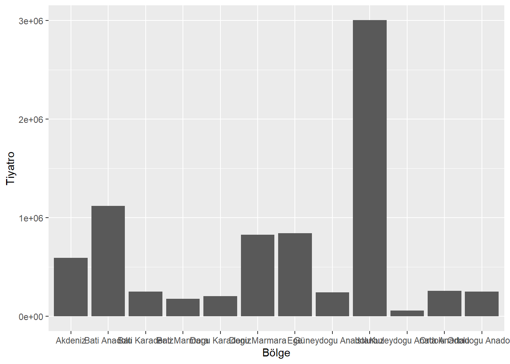
x ekseninde yer alan bölge isimlerini küçültebiliriz.
y eksenine ait değerleri daha okunabilir bir formata getirebiliriz.
Çubukları büyükten küçüğe doğru sıralayabiliriz.
Çubukları renklendirebiliriz.
ggplot(data = v2) +
geom_col(mapping = aes(x = reorder(`Bölge`, -Tiyatro), y = Tiyatro, fill = `Bölge`)) +
theme(axis.text.x = element_text(size = 5)) +
scale_y_continuous(labels = comma)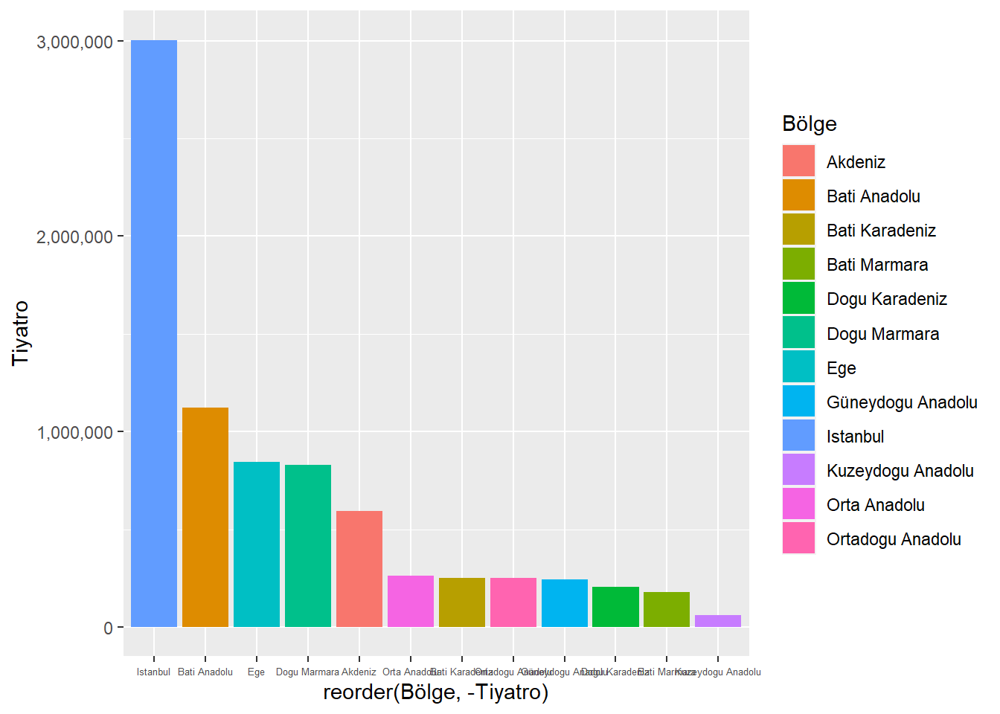
Lejantı kaldırabiliriz.
x ve y eksenlerine ait başlıkları kaldırabiliriz.
Başlık, alt başlık ve kaynak ekleyebiliriz.
Temayı değiştirebiliriz.
ggplot(data = v2) +
geom_col(mapping = aes(x = reorder(`Bölge`, -`Tiyatro`), y = Tiyatro, fill = `Bölge`)) +
theme_minimal() +
scale_y_continuous(labels = comma) +
theme(axis.text.x = element_text(size = 6),
axis.title.x = element_blank(),
axis.title.y = element_blank(),
legend.position = "none") +
labs(x = NULL,
y = NULL,
title = "Bölgeler Düzeyinde Tiyatro Seyirci Sayısı",
subtitle = "2018 yılına ait verilerdir",
caption = "Kaynak: TÜİK")
- Çubukları yatay bir şekilde de gösterebiliriz.
ggplot(data = v2) +
geom_col(mapping = aes(x = reorder(`Bölge`, `Tiyatro`), y = Tiyatro, fill = `Bölge`)) +
theme_minimal() +
scale_y_continuous(labels = comma) +
theme(axis.title.x = element_blank(),
axis.title.y = element_blank(),
legend.position = "none") +
labs(x = NULL,
y = NULL,
title = "Bölgeler Düzeyinde Tiyatro Seyirci Sayısı",
subtitle = "2018 yılına ait verilerdir",
caption = "Kaynak: TÜİK") +
coord_flip()
2.3 Box and Whisker (Kutu-Bıyık)
Günlük BIST Hizmet, Mali, Sınai, Teknoloji endeks kapanışları:

y eksenine ait değerleri daha okunabilir bir formata getirebiliriz.
Kutuları renklendirebiliriz.
ggplot(data = v3) +
geom_boxplot(mapping = aes(x = Endeks, y = `Kapanış`, fill = Endeks)) +
scale_y_continuous(labels = comma) +
scale_fill_brewer(palette = "Set1")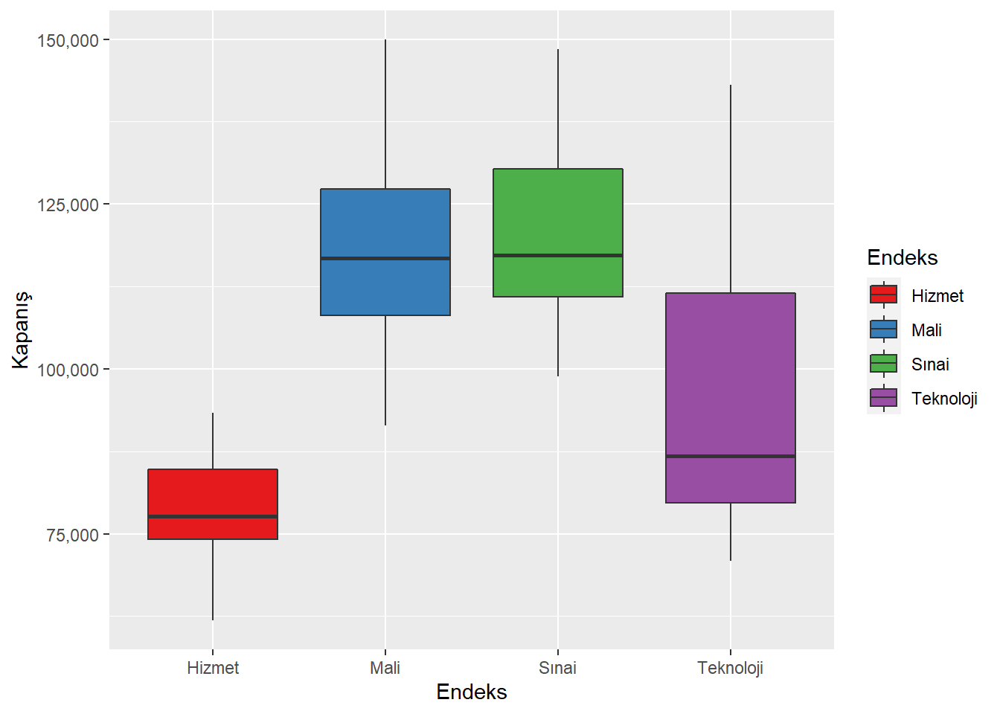
Lejantı kaldırabiliriz.
x eksenine ait başlığı kaldırabiliriz.
Başlık, alt başlık ve kaynak ekleyebiliriz.
Temayı değiştirebiliriz.
ggplot(data = v3) +
geom_boxplot(mapping = aes(x = Endeks, y = `Kapanış`, fill = Endeks)) +
theme_minimal() +
scale_y_continuous(labels = comma) +
scale_fill_brewer(palette = "Set1") +
theme(legend.position = "none") +
labs(x = NULL,
title = "Günlük BIST Hizmet, Mali, Sınai, Teknoloji Endeks Kapanışları",
subtitle = "Son 1 yıla ait verilerdir",
caption = "Kaynak: TCMB")
2.4 Bubble (Balon)
İl ve ilçelere göre İnsani Gelişme Endeksi:
#En basit şekilde
ggplot(data = v4) +
geom_point(mapping = aes(x = `Nüfus`, y = Endeks, size = `Nüfus`))
İllere göre renklendirebiliriz.
Noktaları düzenleyebiliriz.
ggplot(data = v4) +
geom_point(mapping = aes(x = `Nüfus`, y = Endeks, size = `Nüfus`, fill = `İl`), alpha = 0.5, shape = 21) +
scale_color_viridis_d(option = "A")
Lejantı düzenleyebiliriz.
x ve y eksenlerine ait başlıkları düzeltebiliriz.
Başlık, alt başlık ve kaynak ekleyebiliriz.
Temayı değiştirebiliriz.
ggplot(data = v4) +
geom_point(mapping = aes(x = `Nüfus`, y = Endeks, size = `Nüfus`, fill = `İl`), alpha = 0.5, shape = 21) +
scale_fill_viridis_d() +
theme_minimal() +
theme(legend.title = element_blank()) +
labs(x = "Nüfus",
y = "İnsani Gelişme Endeksi",
title = "İl ve İlçelere Göre İnsani Gelişme Endeksi",
caption = "Kaynak: İnsani Gelişme Vakfı, TÜİK")
2.5 Bubble Map (Balon Harita)
Türkiye’de 2017 yılında kaydedilen terörist saldırılar ve ölü sayısı (GTD):
palet <- colorFactor(palette = "Set1", domain = v5$Grup)
v5 %>%
leaflet() %>%
addTiles() %>%
addProviderTiles(provider = providers$CartoDB.DarkMatterNoLabels) %>%
addCircles(lng = ~Boylam, lat = ~Enlem, radius = ~`Ölü Sayısı`*5000, stroke = FALSE,
popup = ~`Grup`, color = ~palet(Grup)) %>%
addLegend(position = "bottomright", pal = palet, values = v5$Grup, title = "", opacity = 1)
2.6 Candlestick (Mum)
BIST’e ait açılış, en yüksek, en düşük, kapanış değerleri:
v6 %<>%
mutate(Date = ymd(Date))
#Veriler aşağıdaki gibi de alınabilir:
#tq_get(x = "GARAN.IS", from = "2020-05-04", to = "2020-05-20")
#En basit şekilde
ggplot(data = v6, mapping = aes(x = Date, y = Close)) +
geom_candlestick(mapping = aes(open = Open, high = High, low = Low, close = Close))
- Düşüş ve yükseliş renklerini değiştirebiliriz.
ggplot(data = v6, mapping = aes(x = Date, y = Close)) +
geom_candlestick(mapping = aes(open = Open, high = High, low = Low, close = Close),
colour_up = "darkgreen", fill_up = "darkgreen",
colour_down = "darkred", fill_down = "darkred")
x ve y eksenlerine ait başlıkları kaldırabiliriz.
Başlık, alt başlık ve kaynak ekleyebiliriz.
Temayı değiştirebiliriz.
ggplot(data = v6, mapping = aes(x = Date, y = Close)) +
geom_candlestick(mapping = aes(open = Open, high = High, low = Low, close = Close),
colour_up = "darkgreen", fill_up = "darkgreen",
colour_down = "darkred", fill_down = "darkred") +
theme_tq() +
labs(x = NULL,
y = NULL,
title = "Garanti Bankası Açılış, En Yüksek, En Düşük, Kapanış Değerleri",
subtitle = "04.05.2020-20.05.2020",
caption = "Kaynak: Yahoo")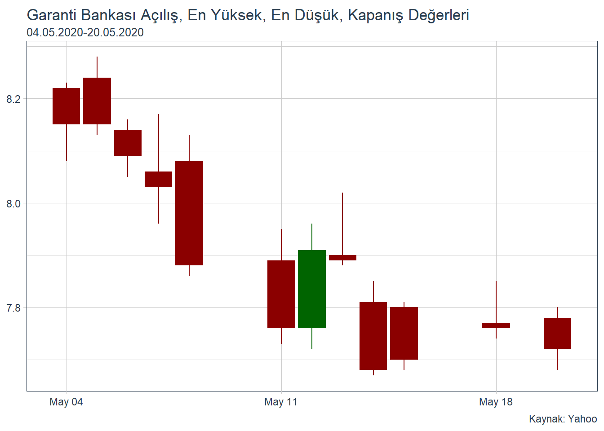
2.7 Chord (Akor)
İstanbul, İzmir ve Ankara’nın en çok göç aldığı 5 il:

- Renklendirebiliriz.
renkler <- c(`GA-34` = "red", `GA-6` = "orange", `GA-35` = "blue")
chordDiagram(x = v7, col = renkler)
2.8 Choropleth Map
İllere göre Covid-19 vaka sayısı (ilk açıklandığı zamana ait veriler):
TR <- getData("GADM", country = "TR", level = 1)
v8$`100KNüfus` <- round(v8$`100KNüfus`, digits = 0)
palet <- colorQuantile(palette = "RdYlBu", domain = v8$`100KNüfus`, n = 5, reverse = TRUE)
leaflet() %>%
addProviderTiles(providers$OpenStreetMap.Mapnik) %>%
addPolygons(data = TR,
stroke = FALSE, smoothFactor = 0.2, fillOpacity = 0.3,
fillColor = ~palet(v8$`100KNüfus`),
popup = paste("<b>Province: </b>", TR$NAME_1, "<br>",
"<b>Total Cases: </b>", v8$Vaka, "<br>",
"<b>Per 100K Pop: </b>", v8$`100KNüfus`)) %>%
addLegend(position = "bottomright", pal = palet, values = v8$`100KNüfus`, title = "", opacity = 1)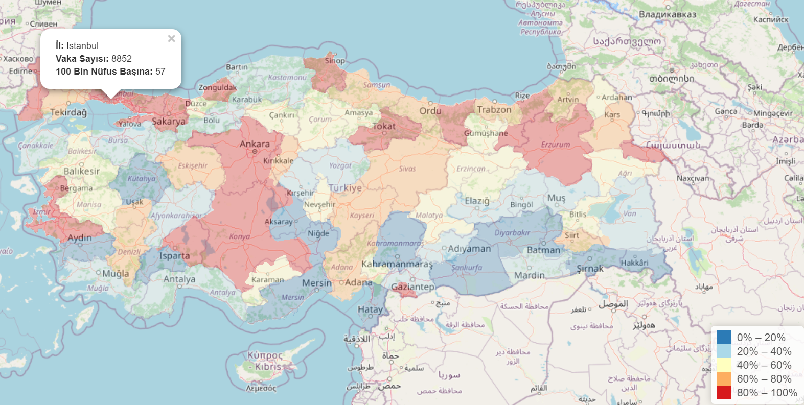
2.9 Circular
Trafiğe kaydı yapılan otomobillerin renkleri:
#En basit şekilde
ggplot(data = v9)+
geom_bar(aes(x = Renk, y = `OtomobilSayısı`), stat = "identity") +
coord_polar()
x ve y eksenlerine ait başlıkları ve y eksenine ait değerleri kaldırabiliriz.
Genişliği ayarlayabiliriz.
Başlık, alt başlık ve kaynak ekleyebiliriz.
Temayı değiştirebiliriz.
ggplot(data = v9)+
geom_bar(aes(x = Renk, y = `OtomobilSayısı`), stat = "identity", width = 1) +
coord_polar() +
theme_minimal() +
theme(axis.title = element_blank(),
axis.text.y = element_blank()) +
labs(x = NULL,
y = NULL,
title = "Trafiğe Kaydı Yapılan Otomobillerin Renkleri",
subtitle = "2020 yılına ait verilerdir",
caption = "Kaynak: TÜİK")
2.10 Connected Scatter (Bağlantılı Saçılım)
Cari dönem enflasyon:
v10 %<>%
mutate(Tarih = as.Date(paste0(Tarih,"-",1)))
#En basit şekilde
ggplot(data = v10, mapping = aes(x = Tarih, y = `Gerçek`)) +
geom_point() +
geom_line()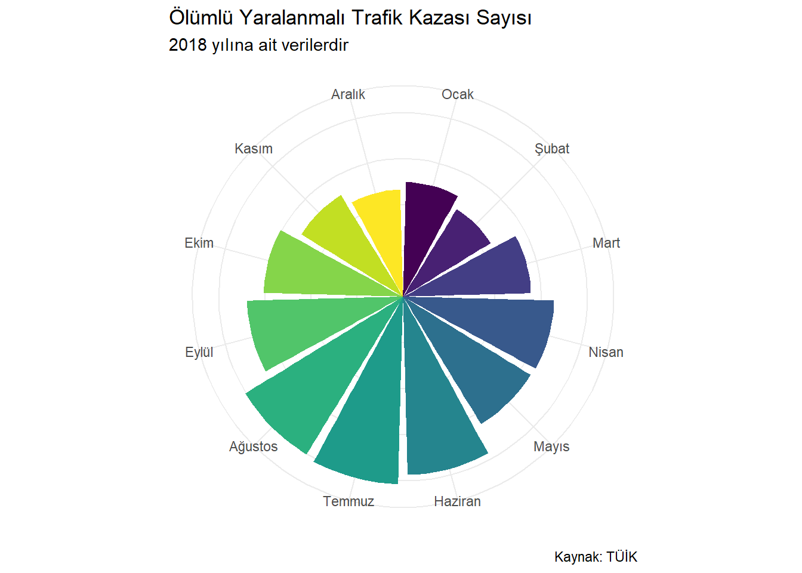
Mevsimlere göre renklendirebiliriz.
y ekseninde her bir yılı gösterebiliriz.
Çizgiyi daha soluk yapabiliriz.
ggplot(data = v10, mapping = aes(x = Tarih, y = `Gerçek`)) +
geom_point(aes(color = Mevsim)) +
geom_line(color = "gray") +
scale_x_date(date_breaks = "year", date_labels = "%Y")
x eksenine ait başlığı kaldırabilir, y eksenine ait başlığı düzeltebiliriz.
Lejantı düzenleyebiliriz.
Başlık, alt başlık ve kaynak ekleyebiliriz.
Temayı değiştirebiliriz.
ggplot(data = v10, mapping = aes(x = Tarih, y = `Gerçek`)) +
geom_point(aes(color = Mevsim)) +
geom_line(color = "gray") +
theme_minimal() +
theme(legend.title = element_blank()) +
scale_x_date(date_breaks = "year", date_labels = "%Y") +
labs(x = NULL,
y = "Gerçekleşen Enflasyon",
title = "Cari Dönem Gerçekleşen Enflasyon",
subtitle = "2013/Ocak-2020/Nisan verilerine aittir",
caption = "Kaynak: TÜİK")
2.11 Connection Map (Bağlantı Harita)
KTÜ’ye yerleşenlerin geldiği yerler (yokatlas):
v11 %>%
leaflet() %>%
addTiles() %>%
addPolylines(lng = ~long, lat = ~lat, weight = 3, opacity = 0.5)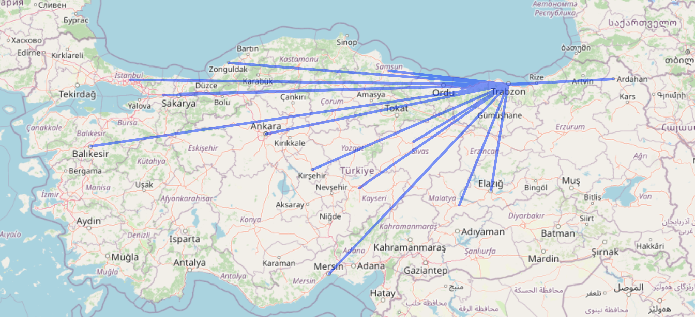
2.12 Density (Yoğunluk)
İstanbul Anadolu Yakası 1+1 kiralık daire fiyatları:

Renklendirme yapabiliriz.
y eksenine ait değerleri daha okunabilir bir formata getirebiliriz.
ggplot(data = v12, mapping = aes(x = Fiyat)) +
geom_density(fill = "red", color = "red", alpha = 0.5) +
scale_y_continuous(labels = comma)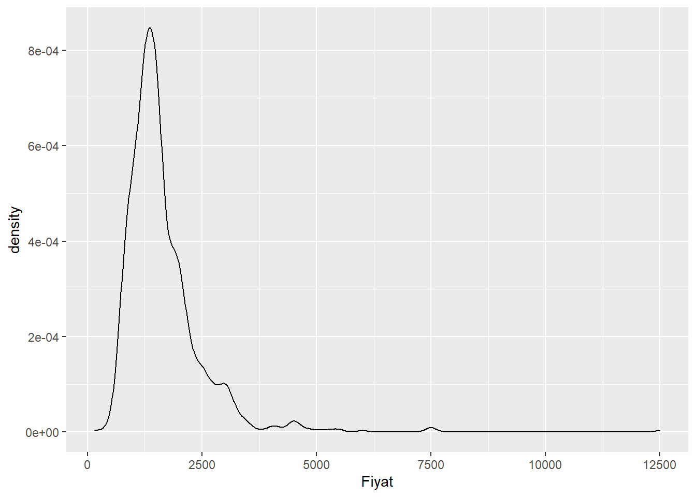
x eksenine ait başlığı kaldırabilir; y eksenine ait başlığı düzenleyebiliriz.
Başlık ve kaynak ekleyebiliriz.
Temayı değiştirebiliriz.
ggplot(data = v12, mapping = aes(x = Fiyat)) +
geom_density(fill = "red", color = "red", alpha = 0.5) +
scale_y_continuous(labels = comma) +
theme_minimal() +
labs(x = NULL,
y = "Yoğunluk",
title = "İstanbul Anadolu Yakası'ndaki 1+1 Kiralık Daire Fiyatları",
caption = "Kaynak: Sahibinden")
2.13 Donut
23 Haziran 2019 İstanbul sonuçları:
#En basit şekilde
v13$Oran <- v13$Oy / sum(v13$Oy) #Oy oranları
v13$ymax <- cumsum(v13$Oran) #Kümülatif oranlar
v13$ymin = c(0, head(v13$ymax, n = -1)) #Alan
ggplot(v13, aes(ymax = ymax, ymin = ymin, xmax = 4, xmin = 3, fill = Aday)) +
geom_rect() +
coord_polar(theta = "y") +
xlim(c(2, 4))
İsimlerin pozisyonlarını ayarlayabiliriz.
Etiketlerin gösterim şeklini ayarlayabiliriz.
Renklendirme yapabiliriz.
v13$EtiketPoz <- (v13$ymax + v13$ymin) / 2
v13$Etiket <- paste0(v13$Aday, "\n%", round(v13$Oran * 100, digits = 2))
ggplot(v13, aes(ymax = ymax, ymin = ymin, xmax = 4, xmin = 3, fill = Aday)) +
geom_rect() +
geom_text(x = 3.5, aes(y = EtiketPoz, label = Etiket), size = 3) +
coord_polar(theta = "y") +
xlim(c(2, 4)) +
scale_fill_manual(values = c("orange", "gray", "red"))
Lejantı kaldırabiliriz.
Başlık, alt başlık ve kaynak ekleyebiliriz.
Temayı değiştirebiliriz.
ggplot(v13, aes(ymax = ymax, ymin = ymin, xmax = 4, xmin = 3, fill = Aday)) +
geom_rect() +
geom_text(x = 3.5, aes(y = EtiketPoz, label = Etiket), size = 3) +
theme_void() +
coord_polar(theta = "y") +
xlim(c(2, 4)) +
scale_fill_manual(values = c("orange", "gray", "red")) +
theme(legend.position = "none") +
labs(title = "İstanbul Seçim Sonuçları",
subtitle = "23 Haziran 2019",
caption = "Kaynak: NTV")
2.14 Dot Map (Nokta Haritası)
Tiplerine göre Türkiye’deki havaalanları (wikipedia):
palet <- colorFactor(palette = c("red","gray","orange","blue"), domain = v14$Tip)
v14 %>%
leaflet() %>%
addTiles() %>%
addProviderTiles(provider = providers$CartoDB.DarkMatterNoLabels) %>%
addCircles(lng = ~Koord2, lat = ~Koord1, weight = 3, popup = ~`Havaalanı`, color = ~palet(Tip)) %>%
addLegend(position = "bottomright", pal = palet, values = v14$Tip, title = "", opacity = 1)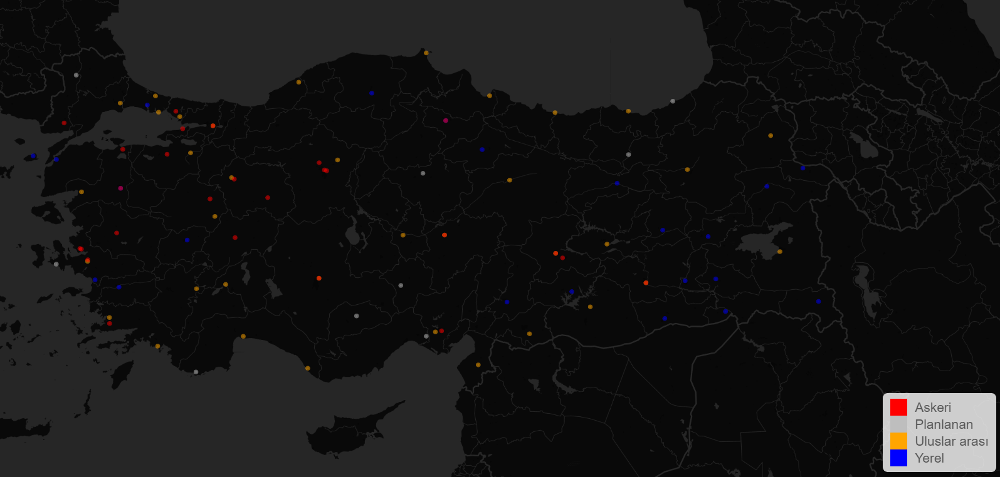
2.15 Dumbbell
Bölgelere ve cinsiyetlere göre ortalama ilk evlenme yaşları:
#En basit şekilde
ggplot(data = v15)+
geom_dumbbell(mapping = aes(x = `Kadın`, xend = Erkek, y = `Bölge`))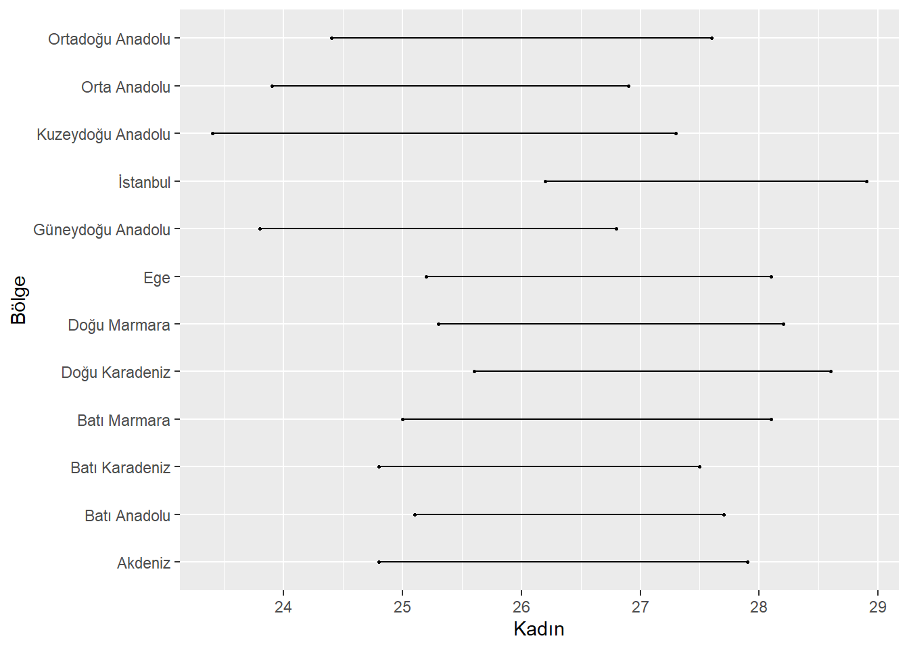
x ve xend büyüklüklerini ve renklerini belirleyebiliriz.
İki nokta arasındaki çizginin görünürlüğünü azaltabiliriz.
ggplot(data = v15)+
geom_dumbbell(mapping = aes(x = `Kadın`, xend = Erkek, y = `Bölge`),
size_x = 2, size_xend = 2,
colour_x = "blue", colour_xend = "red",
colour = "grey")x eksenine ait limit ve aralıkları belirleyebiliriz.
x ve y eksenlerine ait başlıkları kaldırabiliriz.
Başlık, alt başlık ve kaynak ekleyebiliriz.
Temayı değiştirebiliriz.
ggplot(data = v15)+
geom_dumbbell(mapping = aes(x = `Kadın`, xend = Erkek, y = `Bölge`),
size_x = 2, size_xend = 2,
colour_x = "blue", colour_xend = "red",
colour = "grey") +
theme_minimal() +
scale_x_continuous(limits = c(23,30), breaks = seq(23,30,1)) +
labs(x = NULL,
y = NULL,
title = "Bölgelere ve Cinsiyetlere Göre Ortalama İlk Evlenme Yaşları",
subtitle = "2019 yılına ait verilerdir",
caption = "Kaynak: TÜİK")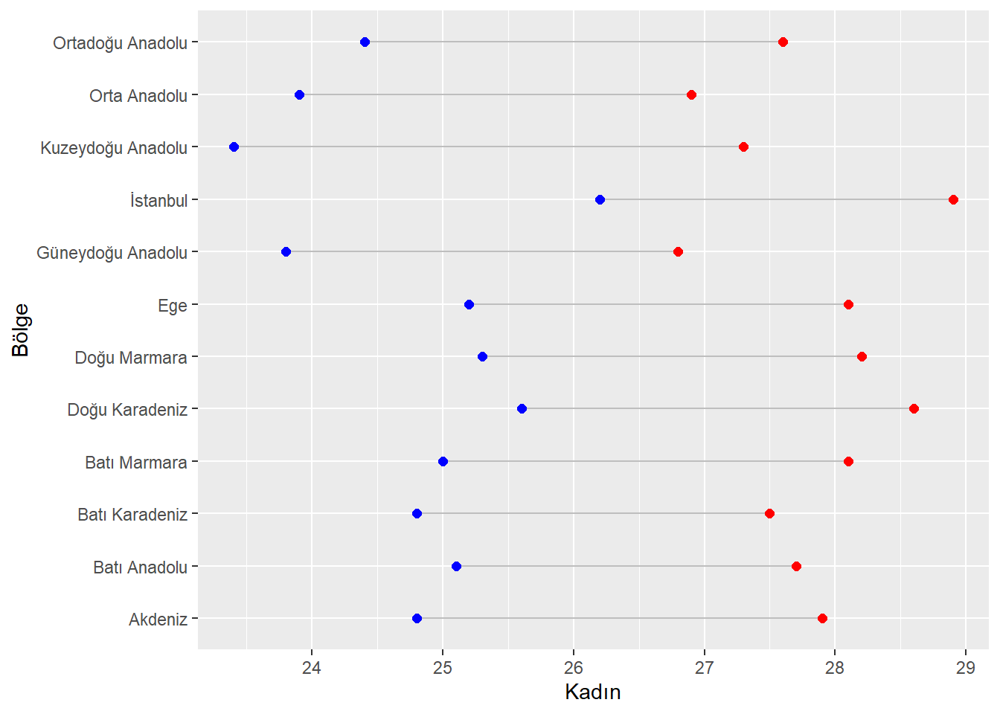
- Noktaların hangi cinsiyete ait olduğunu da belirtebiliriz. Bunu yaparken her bir bölgeye ait çizgide de gösterebiliriz; aşağıda olduğu gibi bir tane bölgeyi filtreleyip tek bir çizgide de gösterebiliriz.
ggplot(data = v15)+
geom_dumbbell(mapping = aes(x = `Kadın`, xend = Erkek, y = `Bölge`),
size_x = 2, size_xend = 2,
colour_x = "blue", colour_xend = "red",
colour = "grey") +
scale_x_continuous(limits = c(23,30), breaks = seq(23,30,1)) +
geom_text(data = v15 %>% filter(`Bölge` == "Ortadoğu Anadolu"),
aes(x = `Kadın`, y = `Bölge`, label = "Kadın"), size = 3, hjust = 1.2) +
geom_text(data = v15 %>% filter(`Bölge` == "Ortadoğu Anadolu"),
aes(x = `Erkek`, y = `Bölge`, label = "Erkek"), size = 3, hjust = -0.2) +
theme_minimal() +
labs(x = NULL,
y = NULL,
title = "Bölgelere ve Cinsiyetlere Göre Ortalama İlk Evlenme Yaşları",
subtitle = "2019 yılına ait verilerdir",
caption = "Kaynak: TÜİK")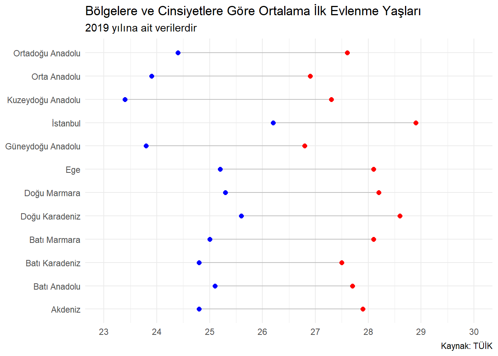
2.16 Heatmap (Isı Haritası)
Tüketici güven endeksi verileri:
v16 %<>%
mutate("Yıl" = year(Tarih), "Ay" = month(Tarih, label = TRUE))
#En basit şekilde
ggplot(data = v16) +
geom_tile(mapping = aes(x = `Yıl`, y = Ay, fill = Endeks))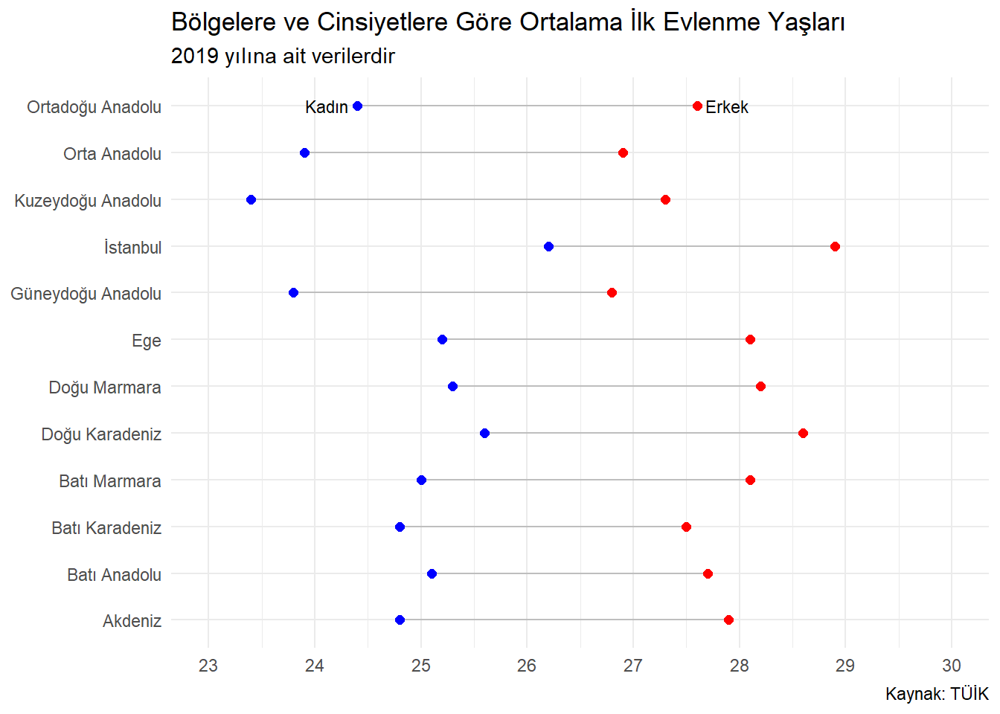
- Renkleri değiştirebiliriz.
ggplot(data = v16) +
geom_tile(mapping = aes(x = `Yıl`, y = Ay, fill = Endeks)) +
scale_fill_viridis_c()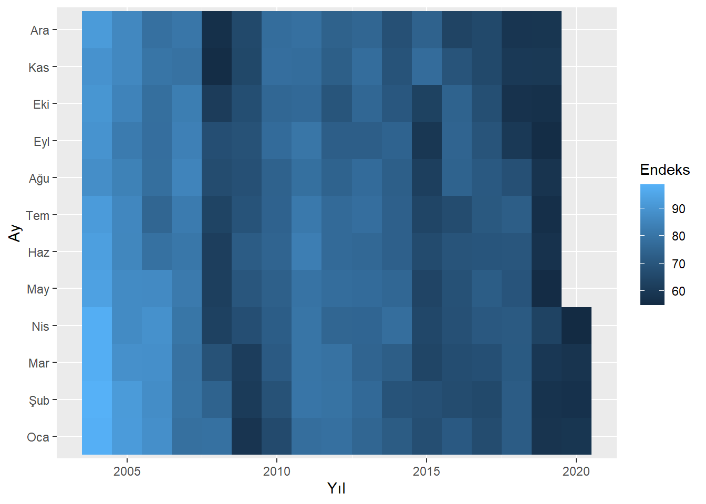
y eksenini ters çevirebiliriz.
Grafikteki boşlukları kapatabiliriz.
ggplot(data = v16) +
geom_tile(mapping = aes(x = `Yıl`, y = Ay, fill = Endeks)) +
scale_fill_viridis_c() +
scale_y_discrete(limits = rev(levels(v16$Ay))) +
scale_x_continuous(expand = c(0,0))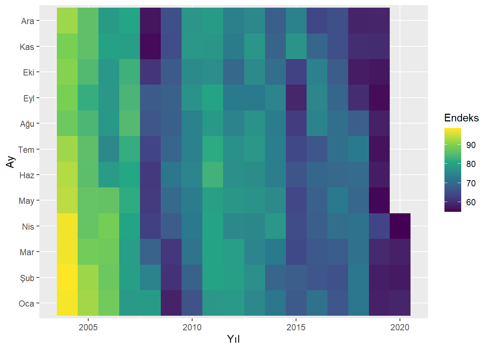
Lejantı düzenleyebiliriz.
x ve y eksenlerine ait başlıkları kaldırabiliriz.
Başlık, alt başlık ve kaynak ekleyebiliriz.
Temayı değiştirebiliriz.
ggplot(data = v16) +
geom_tile(mapping = aes(x = `Yıl`, y = Ay, fill = Endeks)) +
scale_fill_viridis_c() +
theme(legend.position = "bottom",
legend.key.width = unit(3, "cm"),
legend.title = element_blank(),
panel.background = element_rect(fill = "white", colour = "gray")) +
scale_y_discrete(limits = rev(levels(v16$Ay))) +
scale_x_continuous(expand = c(0,0)) +
labs(x = NULL,
y = NULL,
title = "Tüketici Güven Endeksi",
subtitle = "Ocak/2004-Nisan/2020 tarihlerine ait verilerdir",
caption = "Kaynak: TÜİK")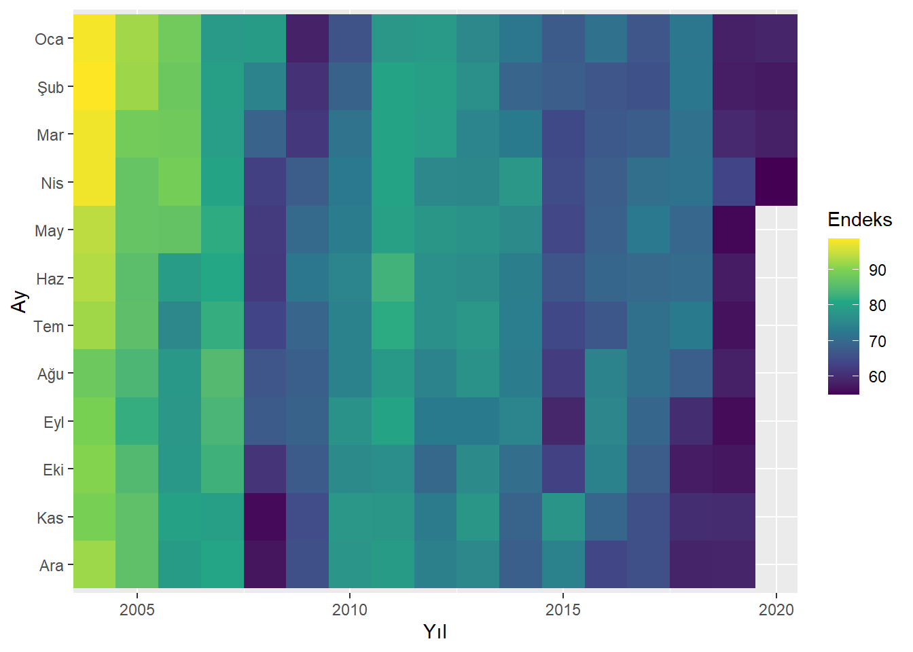
2.17 Histogram
Günlük BIST Endeksi toplam işlem hacmi:
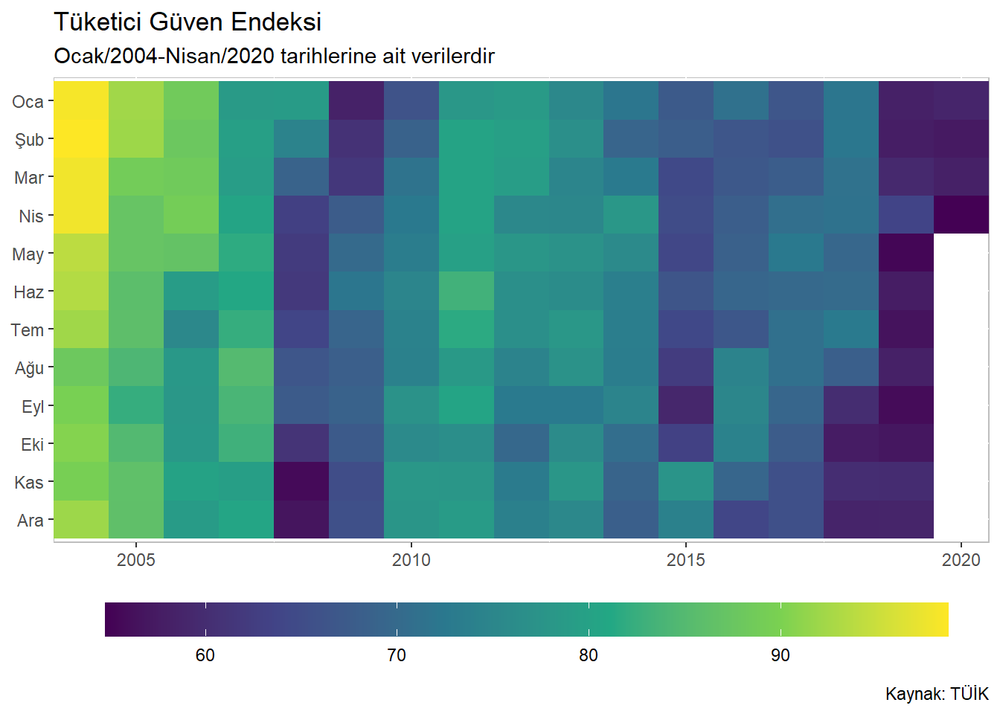
Aralık seçimini ayarlayabiliriz.
x eksenine ait değerleri daha okunabilir bir formata getirebiliriz.
Renklendirme yapabiliriz.
ggplot(data = v17) +
geom_histogram(mapping = aes(x = `ToplamİşlemHacmi`), binwidth = 500000, fill = "dark red") +
scale_x_continuous(labels = comma)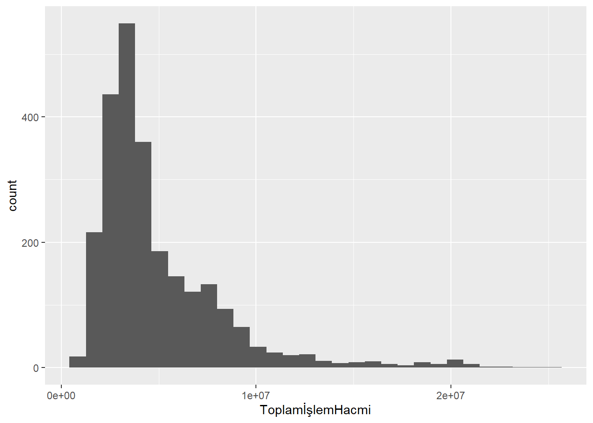
x eksenine ait başlığı kaldırabilir, y eksenine ait başlığı düzeltebiliriz.
Ortalama çizgisi (kesikli) ekleyebiliriz.
Başlık, alt başlık ve kaynak ekleyebiliriz.
Temayı değiştirebiliriz.
ggplot(data = v17) +
geom_histogram(mapping = aes(x = `ToplamİşlemHacmi`), binwidth = 500000, fill = "dark red") +
geom_vline(xintercept = mean(v17$`ToplamİşlemHacmi`), linetype = "dashed") +
theme_minimal() +
scale_x_continuous(labels = comma) +
labs(x = NULL,
y = "Sayma",
title = "Günlük BIST Endeksi Toplam İşlem Hacmi",
subtitle = "Son 10 yıla ait verilerdir",
caption = "Kaynak: TCMB")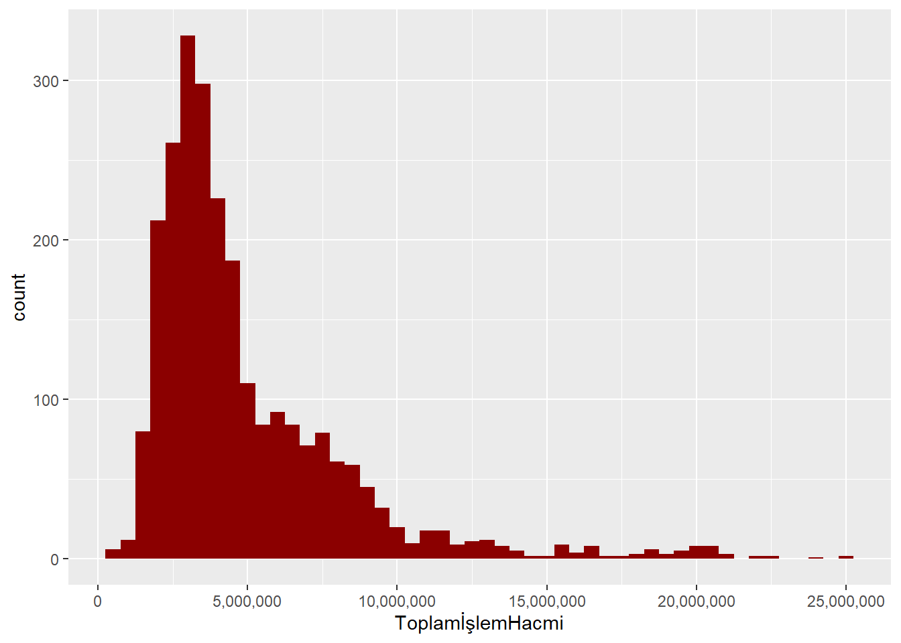
2.18 Line (Çizgi)
Günlük Dolar ve Euro alış kuru:
v18 %<>%
mutate(Tarih = as.Date(Tarih))
#En basit şekilde
ggplot(data = v18) +
geom_line(mapping = aes(x = Tarih, y = `Alış`, group = Kur))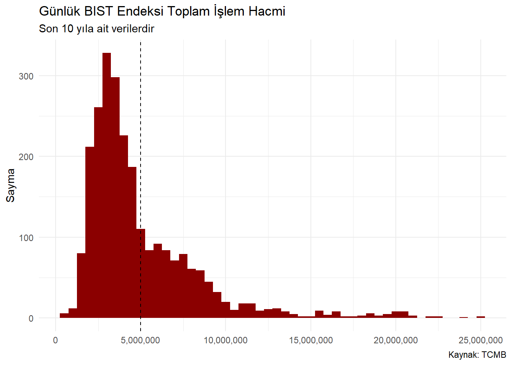
Renkleri değiştirebiliriz.
Kur tiplerini ayırabiliriz.
x eksenindeki tarihleri belli bir aralıkta gösterebiliriz.
y eksenindeki değerleri belli bir limit ve aralıkta gösterebiliriz.
ggplot(data = v18) +
geom_line(mapping = aes(x= Tarih, y = `Alış`, group = Kur, color = Kur)) +
scale_x_date(date_labels = "%Y", date_breaks = "year") +
scale_y_continuous(limits = c(0,8), breaks = seq(0,8,1)) +
scale_color_manual(values = c("black","red"))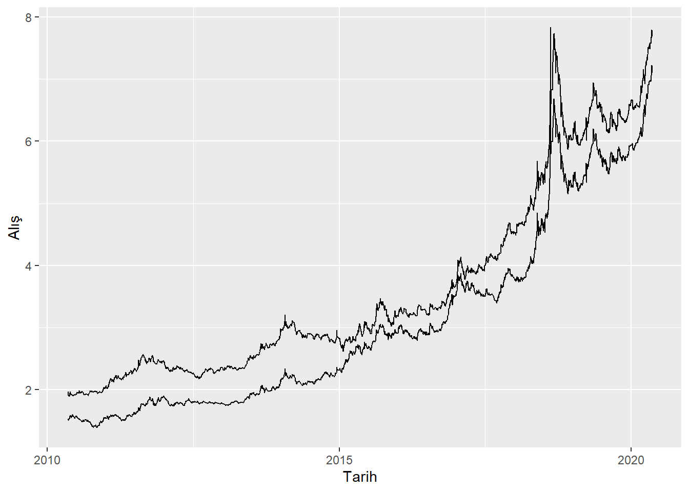
- Her bir çizginin sonunda hangi kura ait olduğunu belirtebiliriz.
ggplot(data = v18, mapping = aes(x= Tarih, y = `Alış`, group = Kur, color = Kur)) +
geom_line() +
geom_dl(aes(label = Kur), method = list(dl.combine("last.points"), cex = 0.8)) +
scale_x_date(date_labels = "%Y", date_breaks = "year") +
scale_y_continuous(limits = c(0,8), breaks = seq(0,8,1)) +
scale_color_manual(values = c("black","red"))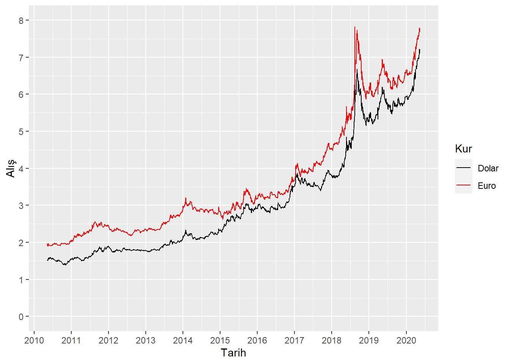
Lejantı kaldırabiliriz.
x eksenine ait başlığı kaldırabilir; y eksenine ait başlığı düzeltebiliriz.
Başlık, alt başlık ve kaynak ekleyebiliriz.
Temayı değiştirebiliriz.
ggplot(data = v18, mapping = aes(x = Tarih, y = `Alış`, group = Kur, color = Kur)) +
geom_line() +
geom_dl(aes(label = Kur), method = list(dl.combine("last.points"), cex = 0.7)) +
theme_minimal() +
scale_x_date(date_labels = "%Y", date_breaks = "year") +
scale_y_continuous(limits = c(0,8), breaks = seq(0,8,1)) +
scale_color_manual(values = c("black","red")) +
theme(legend.position = "none") +
labs(x = NULL,
y = "Alış",
title = "Günlük Dolar ve Euro Alış Kuru",
subtitle = "Son 10 yıla ait verilerdir",
caption = "Kaynak: TCMB")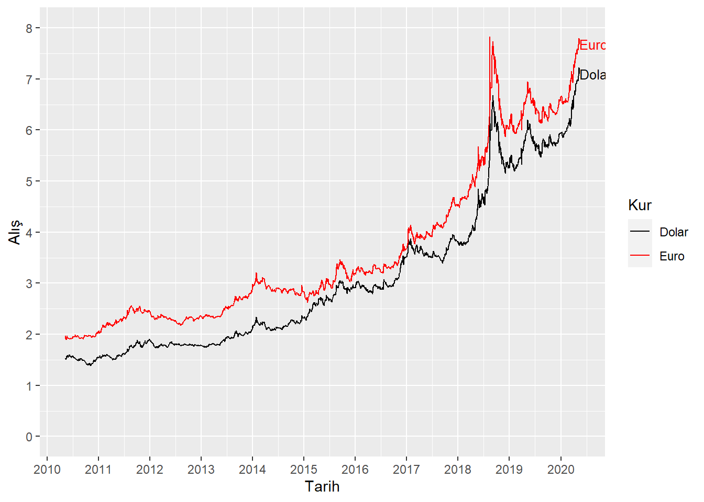
2.19 Lollipop
Trafiğe kaydı yapılan otomobillerin renkleri:
#En basit şekilde
ggplot(data = v9, mapping = aes(x = Renk, y = `OtomobilSayısı`)) +
geom_segment(mapping = aes(xend = Renk, y = 0, yend = `OtomobilSayısı`)) +
geom_point()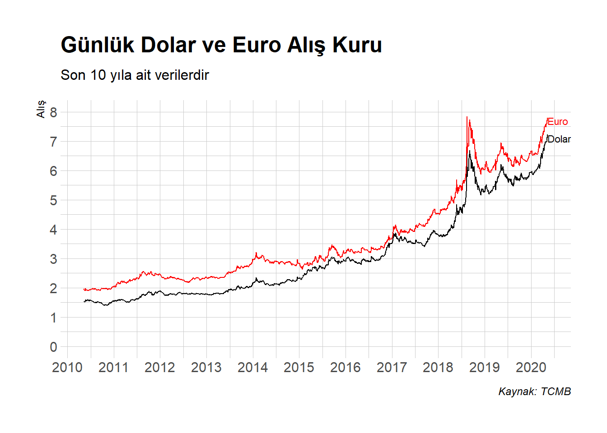
Çizgileri kesikli yapabiliriz.
Noktaların renklerini ve büyüklüklerini değiştirebiliriz.
Büyükten küçüğe sıralayabiliriz.
x eksenine ait değerleri daha okunabilir bir formata getirebiliriz.
ggplot(data = v9, mapping = aes(x = reorder(Renk, -`OtomobilSayısı`), y = `OtomobilSayısı`)) +
geom_segment(mapping = aes(xend = Renk, y = 0, yend = `OtomobilSayısı`), linetype = "dashed") +
geom_point(size = 3, color = "orange") +
scale_y_continuous(labels = scales::comma)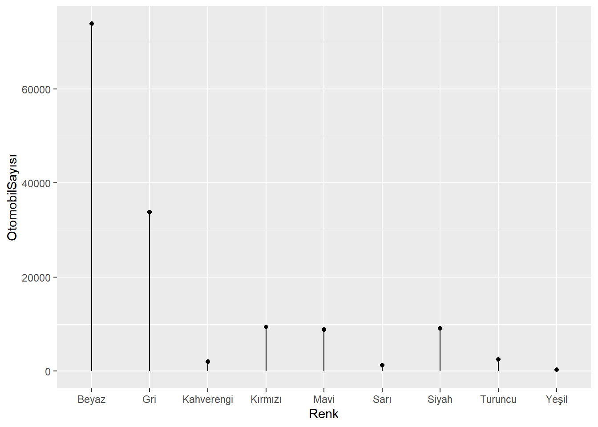
x eksenine ait başlığı kaldırabilir; y eksenine ait başlığı düzeltebiliriz.
Başlık, alt başlık ve kaynak ekleyebiliriz.
Temayı değiştirebiliriz.
ggplot(data = v9, mapping = aes(x = reorder(Renk, -`OtomobilSayısı`), y = `OtomobilSayısı`)) +
geom_segment(mapping = aes(xend = Renk, y = 0, yend = `OtomobilSayısı`), linetype = "dashed") +
geom_point(size = 3, color = "orange") +
scale_y_continuous(labels = scales::comma) +
theme_minimal() +
labs(x = NULL,
y = "Otomobil Sayısı",
title = "Trafiğe Kaydı Yapılan Otomobillerin Renkleri",
subtitle = "2020 yılına ait verilerdir",
caption = "Kaynak: TÜİK")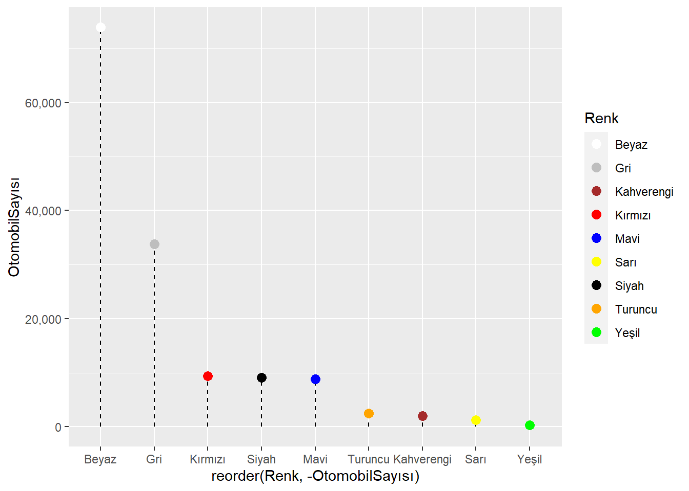
2.20 Multi-set Bar (Çoklu Çubuk)
Bölgeler düzeyinde tiyatro-sinema seyirci sayısı:
#En basit şekilde
ggplot(data = v19) +
geom_col(mapping = aes(x = `Bölge`, y = `Sayı`, fill = `Tip`), position = "dodge")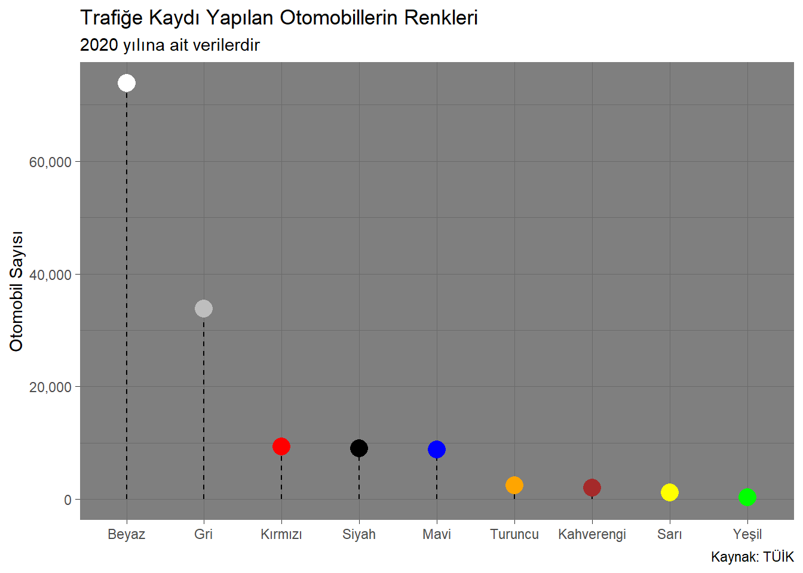
x ekseninde yer alan bölge isimlerini küçültebiliriz.
y eksenine ait değerleri daha okunabilir bir formata getirebiliriz.
Çubukları büyükten küçüğe doğru sıralayabiliriz.
Çubukları renklendirebiliriz.
ggplot(data = v19) +
geom_col(mapping = aes(x = reorder(`Bölge`, -`Sayı`), y = `Sayı`, fill = `Tip`), position = "dodge") +
theme(axis.text.x = element_text(size = 5)) +
scale_y_continuous(labels = comma) +
scale_fill_manual(values = c("red","blue"))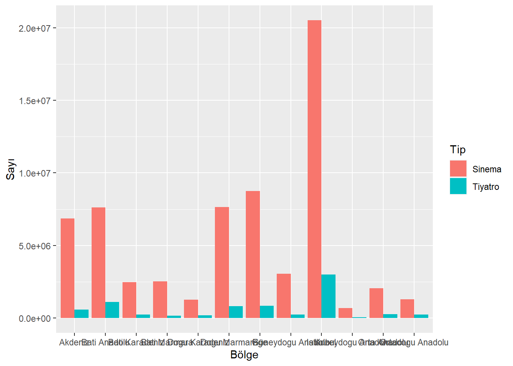
Lejantı kaldırabiliriz.
x ve y eksenlerine ait başlıkları kaldırabiliriz.
Başlık, alt başlık ve kaynak ekleyebiliriz.
Temayı değiştirebiliriz.
ggplot(data = v19) +
geom_col(mapping = aes(x = reorder(`Bölge`, -`Sayı`), y = `Sayı`, fill = `Tip`), position = "dodge") +
theme_minimal() +
scale_y_continuous(labels = comma) +
theme(axis.text.x = element_text(size = 6),
axis.title.x = element_blank(),
axis.title.y = element_blank(),
legend.position = "bottom",
legend.title = element_blank()) +
labs(title = "Bölgeler Düzeyinde Tiyatro ve Sinema Seyirci Sayısı",
subtitle = "2018 yılına ait verilerdir",
caption = "Kaynak: TÜİK") +
scale_fill_manual(values = c("red","blue"))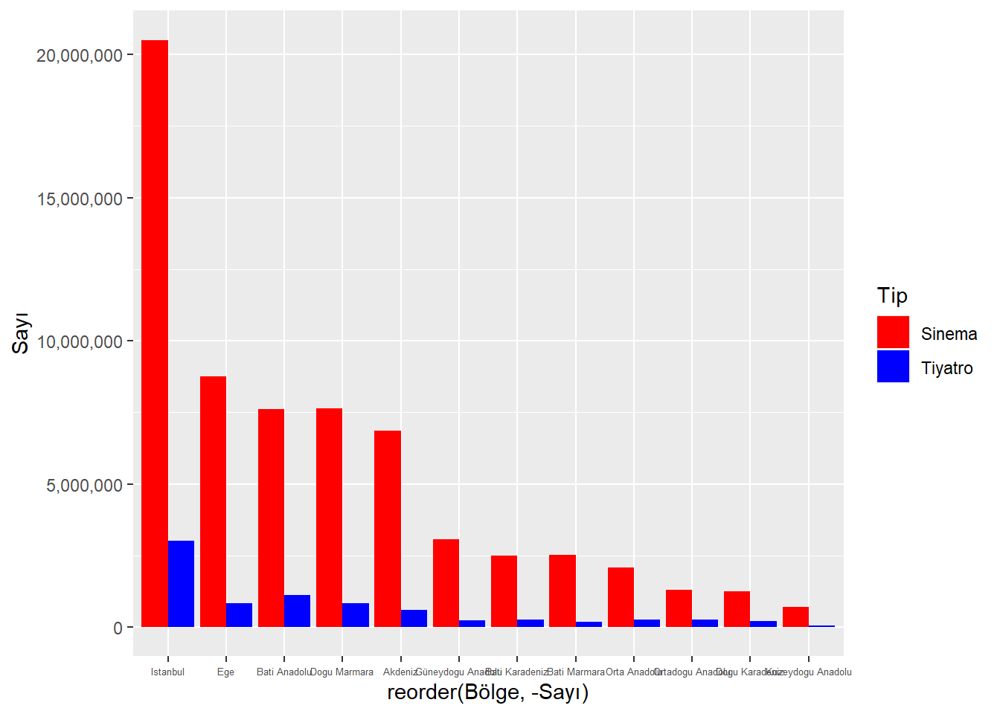
2.21 Network (Ağ)
Seçtiğim dört arkadaş + benim ortak takip ettiğimiz hesaplar:
plot(graph_from_data_frame(v20))
#Kişisel çalışmanızı aşağıdaki gibi yapabilirsiniz:
# library(rtweet)
# arkadaslar <- get_friends(c("EdaDenizOzdemir","canozkaaan","sam_econ","fratmelhylmaz","rpydaneogrendim"))
# tablo <- table(arkadaslar$user_id)
# arkadaslar <- subset(arkadaslar, user_id %in% names(tablo[tablo >= 4L]))
# isimler <- lookup_users(arkadaslar$user_id)
# isimler <- isimler[,c(1,4)]
# arkadaslar <- merge(arkadaslar, isimler[,-2], by = "user_id")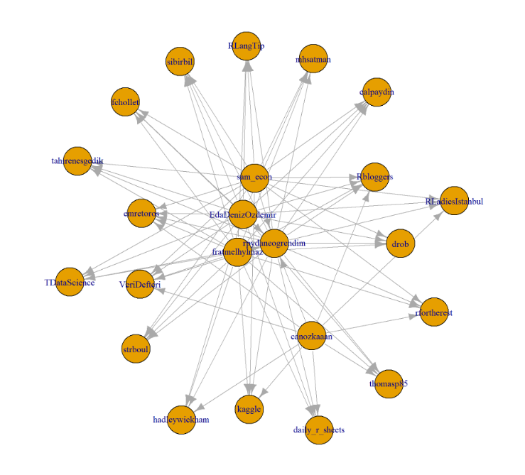
2.22 OHLC (Açılış-Yükseliş-Düşüş-Kapanış)
BIST’e ait açılış, en yüksek, en düşük, kapanış değerleri:
v6 %<>%
mutate(Date = ymd(Date))
#Veriler aşağıdaki gibi de alınabilir:
#tq_get(x = "GARAN.IS", from = "2020-05-04", to = "2020-05-20")
#En basit şekilde
ggplot(data = v6, mapping = aes(x = Date, y = Close)) +
geom_barchart(mapping = aes(open = Open, high = High, low = Low, close = Close))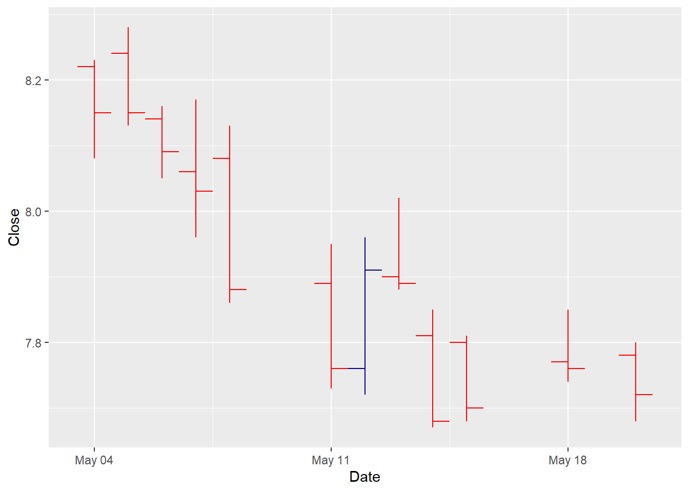
Düşüş ve yükseliş renklerini değiştirebiliriz.
Kalınlığını ayarlayabiliriz.
ggplot(data = v6, mapping = aes(x = Date, y = Close)) +
geom_barchart(mapping = aes(open = Open, high = High, low = Low, close = Close),
colour_up = "darkgreen", colour_down = "darkred", size = 1)x ve y eksenlerine ait başlıkları kaldırabiliriz.
Başlık, alt başlık ve kaynak ekleyebiliriz.
Temayı değiştirebiliriz.
ggplot(data = v6, mapping = aes(x = Date, y = Close)) +
geom_barchart(mapping = aes(open = Open, high = High, low = Low, close = Close),
colour_up = "darkgreen", colour_down = "darkred", size = 1) +
theme_tq() +
labs(x = NULL,
y = NULL,
title = "Garanti Bankası Açılış, En Yüksek, En Düşük, Kapanış Değerleri",
subtitle = "04.05.2020-20.05.2020",
caption = "Kaynak: Yahoo")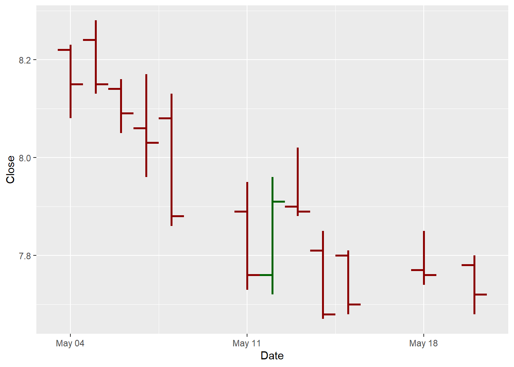
2.23 Population Pyramid (Nüfus Piramidi)
Türkiye nüfus piramidi:
#En basit şekilde
ggplot(data = v21,
mapping = aes(x = reorder(`Yaş Grubu`, `Sıralama`), fill = Cinsiyet,
y = ifelse(test = Cinsiyet == "Erkek", yes = -`Nüfus`, no = `Nüfus`))) +
geom_bar(stat = "identity") +
coord_flip()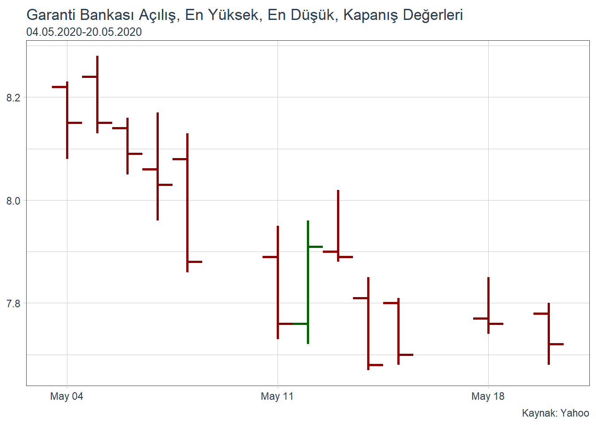
x eksenindeki değerleri kaldırabiliriz.
Renkleri değiştirebiliriz.
ggplot(data = v21,
mapping = aes(x = reorder(`Yaş Grubu`, `Sıralama`), fill = Cinsiyet,
y = ifelse(test = Cinsiyet == "Erkek", yes = -`Nüfus`, no = `Nüfus`))) +
geom_bar(stat = "identity") +
scale_y_continuous(labels = abs, limits = max(v21$`Nüfus`) * c(-1,1)) +
theme(axis.text.x = element_blank()) +
scale_fill_brewer(palette = "Dark2") +
coord_flip()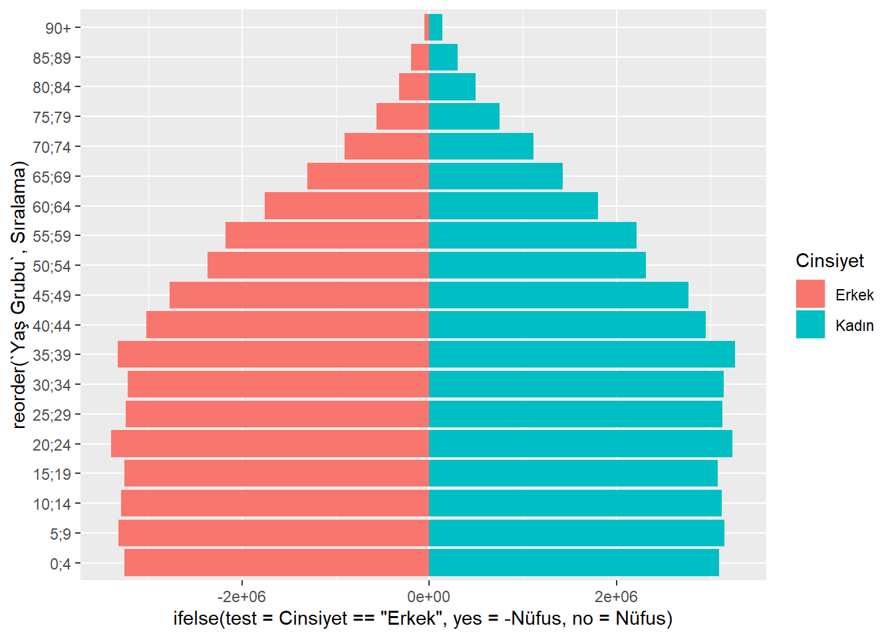
Lejantı düzenleyebiliriz.
Başlık, alt başlık ve kaynak ekleyebiliriz.
Temayı değiştirebiliriz.
ggplot(data = v21,
mapping = aes(x = reorder(`Yaş Grubu`, `Sıralama`), fill = Cinsiyet,
y = ifelse(test = Cinsiyet == "Erkek", yes = -`Nüfus`, no = `Nüfus`))) +
geom_bar(stat = "identity") +
theme_minimal() +
scale_y_continuous(labels = abs, limits = max(v21$`Nüfus`) * c(-1,1)) +
labs(x = NULL,
y = NULL,
title = "Türkiye Nüfus Piramidi",
subtitle = "2019 yılı nüfus verileri",
caption = "Kaynak: TÜİK") +
theme(axis.text.x = element_blank(),
legend.title = element_blank()) +
scale_fill_brewer(palette = "Dark2") +
coord_flip()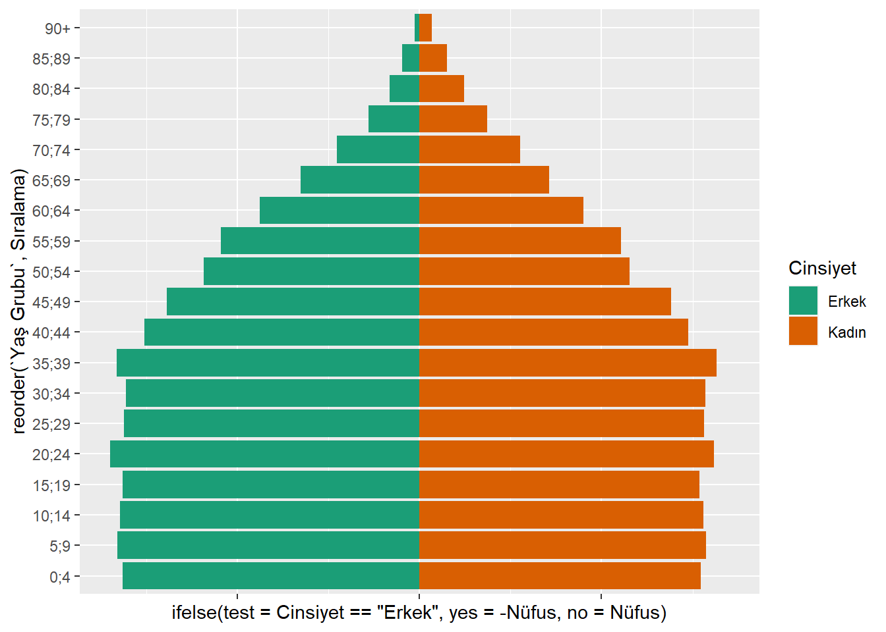
2.24 Radar
Dört büyüklerin aldığı kupa sayıları:
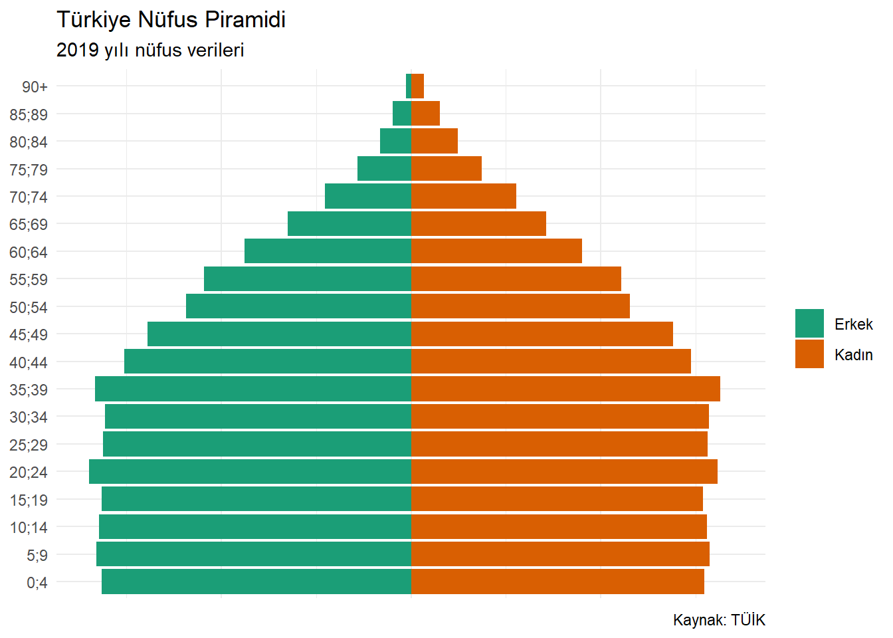
- İki tane satır eklememiz gerekiyor. Bu satırlar değişken sayısı kadar olacak ve her biri için minimum ve maksimum (kupa) sayıları belirtecek.
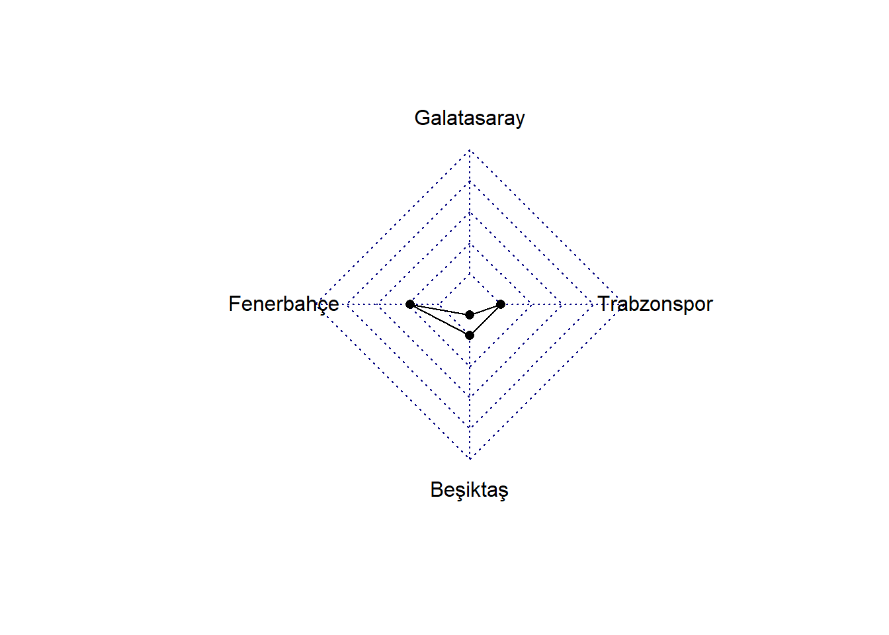
- Çizgi ve alanları renklendirebiliriz.
cizgi <- c(alpha("blue", 1), alpha("black", 1), alpha("yellow", 1))
alan <- c(alpha("blue", 0.5), alpha("black", 0.5), alpha("yellow", 0.5))
radarchart(v22,
pcol = cizgi,
pfcol = alan)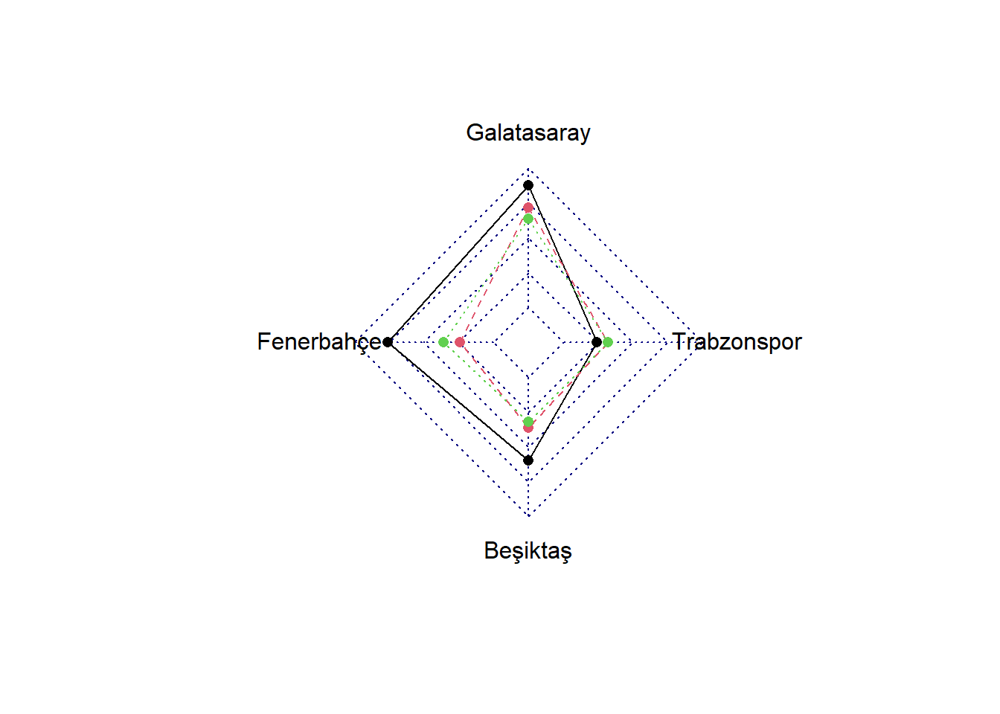
Etiketleri düzeltebiliriz.
Çizgileri düzeltebiliriz.
cizgi_kalinligi <- 3
cizgi_tipi <- 1
cizgi_renk <- "gray"
etiket_buyuklugu <- 0.7
radarchart(v22,
pcol = cizgi,
pfcol = alan,
plwd = cizgi_kalinligi,
plty = cizgi_tipi,
cglcol = cizgi_renk,
vlcex = etiket_buyuklugu)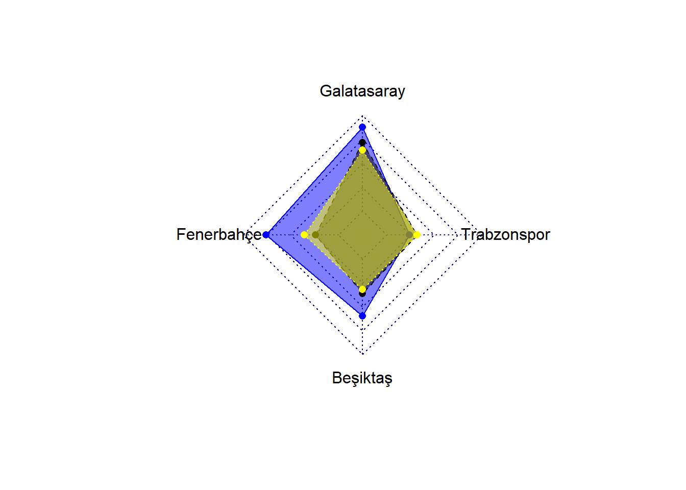
Lejant ekleyebiliriz.
Başlık ekleyebiliriz.
radarchart(v22,
pcol = cizgi,
pfcol = alan,
plwd = cizgi_kalinligi,
plty = cizgi_tipi,
cglcol = cizgi_renk,
vlcex = etiket_buyuklugu,
title = "Dört Büyüklerin Aldıkları Kupa Sayıları | TFF")
legend(x = 0.5,
y = 1.2,
legend = rownames(v22[-c(1,2),]),
pch = 15,
col = alan,
cex = 1.2,
pt.cex = 3,
bty = "n")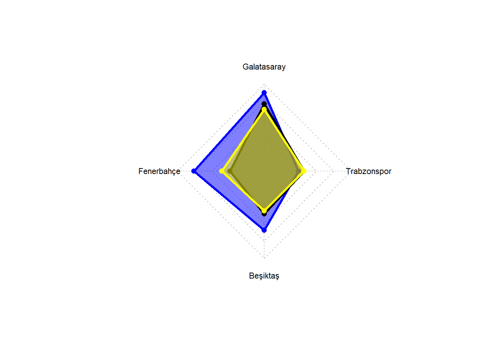
2.25 Ridgeline
Günlük BIST Hizmet, Mali, Sınai, Teknoloji endeks kapanışları:
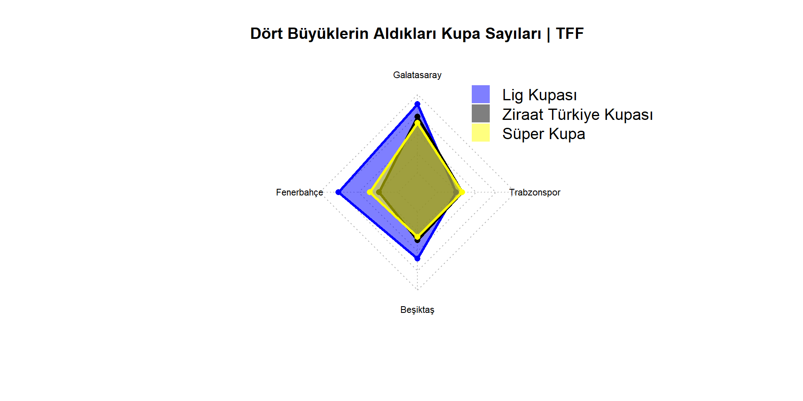
x eksenine ait değerleri daha okunabilir bir formata getirebiliriz.
Renklendiri değiştirebiliriz.
ggplot(data = v3) +
geom_density_ridges(mapping = aes(x = `Kapanış`, y = Endeks, fill = Endeks)) +
scale_x_continuous(labels = comma) +
scale_fill_brewer(palette = "Dark2")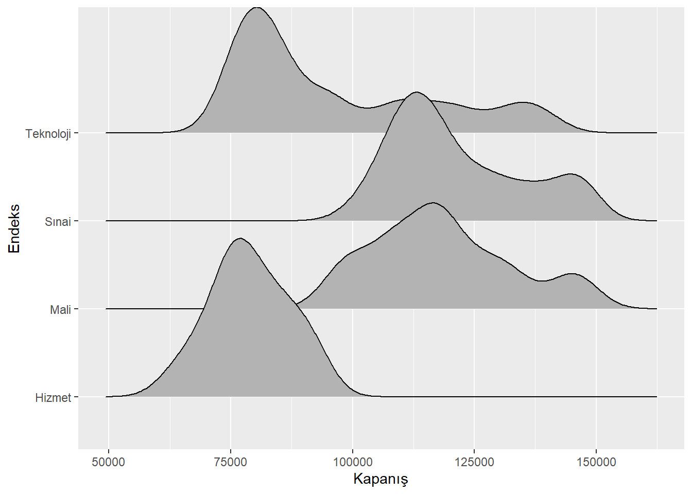
Lejantı kaldırabiliriz.
y eksenine ait başlığı kaldırabilir; x eksenine ait başlığı düzeltebiliriz.
Başlık, alt başlık ve kaynak ekleyebiliriz.
Temayı değiştirebiliriz.
ggplot(data = v3) +
geom_density_ridges(mapping = aes(x = `Kapanış`, y = Endeks, fill = Endeks)) +
theme_minimal() +
scale_x_continuous(labels = scales::comma) +
scale_fill_brewer(palette = "Dark2") +
theme(legend.position = "none") +
labs(x = NULL,
y = "Endeks Kapanışları",
title = "Günlük BIST Hizmet, Mali, Sınai, Teknoloji Endeks Kapanışları",
subtitle = "Son 1 yıla ait verilerdir",
caption = "Kaynak: TCMB")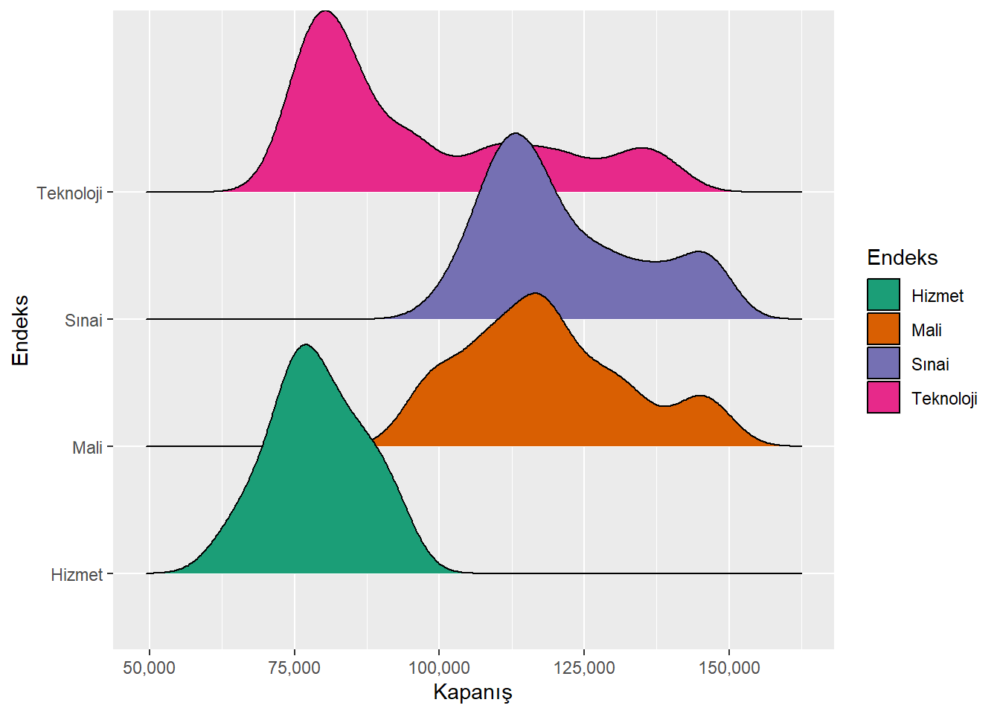
2.26 Scatter (Dağılım, Nokta, Saçılım)
Cari dönem enflasyon beklentisi ile gerçekleşen enflasyon:
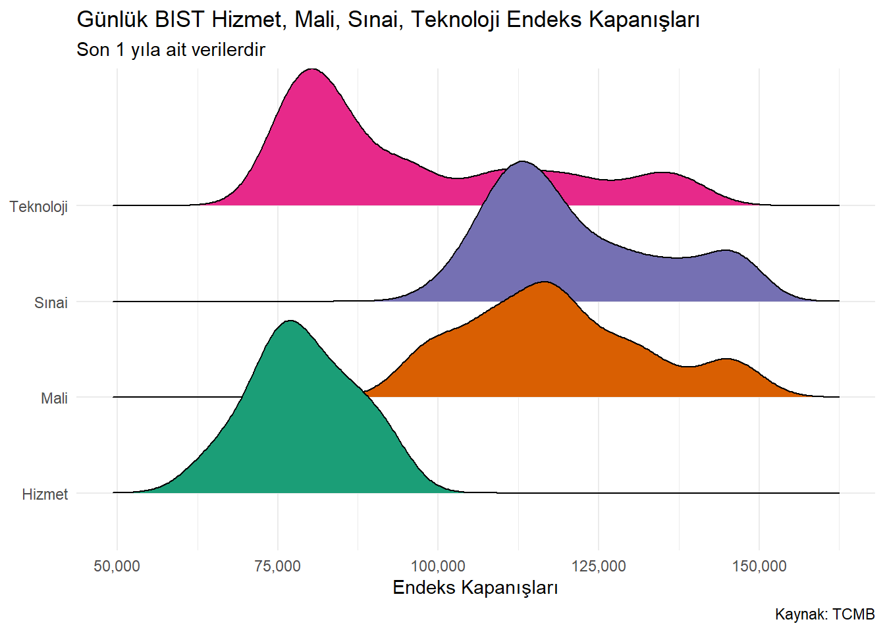
- Mevsimlere göre renklendirebiliriz.
ggplot(data = v10) +
geom_point(mapping = aes(x = Beklenti, y = `Gerçek`, color = Mevsim)) +
scale_color_brewer(palette = "Set1")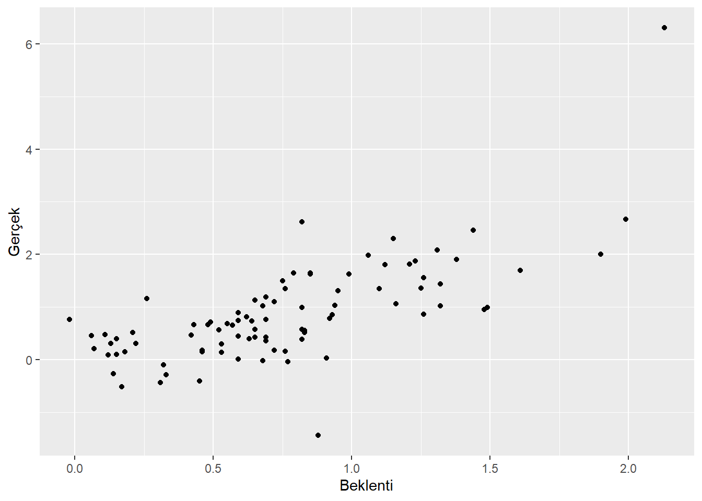
Lejantı kaldırabiliriz.
Başlık, alt başlık ve kaynak ekleyebiliriz.
Temayı değiştirebiliriz.
ggplot(data = v10) +
geom_point(mapping = aes(x = Beklenti, y = `Gerçek`, color = Mevsim)) +
scale_color_brewer(palette = "Set1") +
theme_minimal() +
theme(legend.title = element_blank()) +
labs(title = "Cari Dönem Enflasyon Beklentisi-Gerçekleşen",
subtitle = "2013/Ocak-2020/Nisan verilerine aittir",
caption = "Kaynak: TCMB")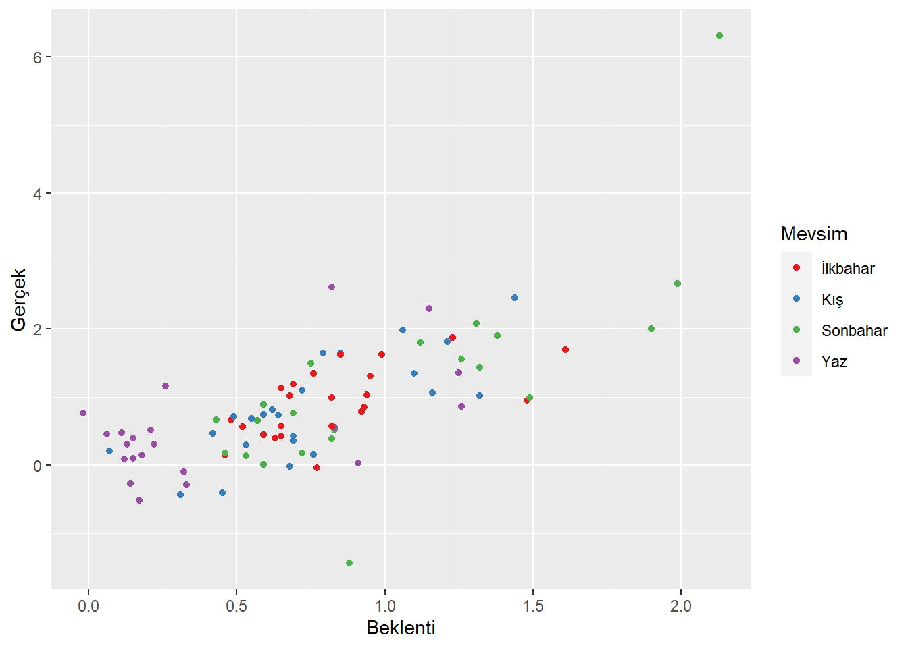
2.27 Stacked Area (Yığılı Alan)
Covid-19 vaka, iyileşen ve ölüm sayıları:
#En basit şekilde
v23$Grup <- factor(v23$Grup, levels = c("Vaka", "İyileşen", "Ölüm")) #Yapılacak sıralama önemlidir.
ggplot(data = v23) +
geom_area(mapping = aes(x = `Gün`, y = `Sayı`, fill = Grup))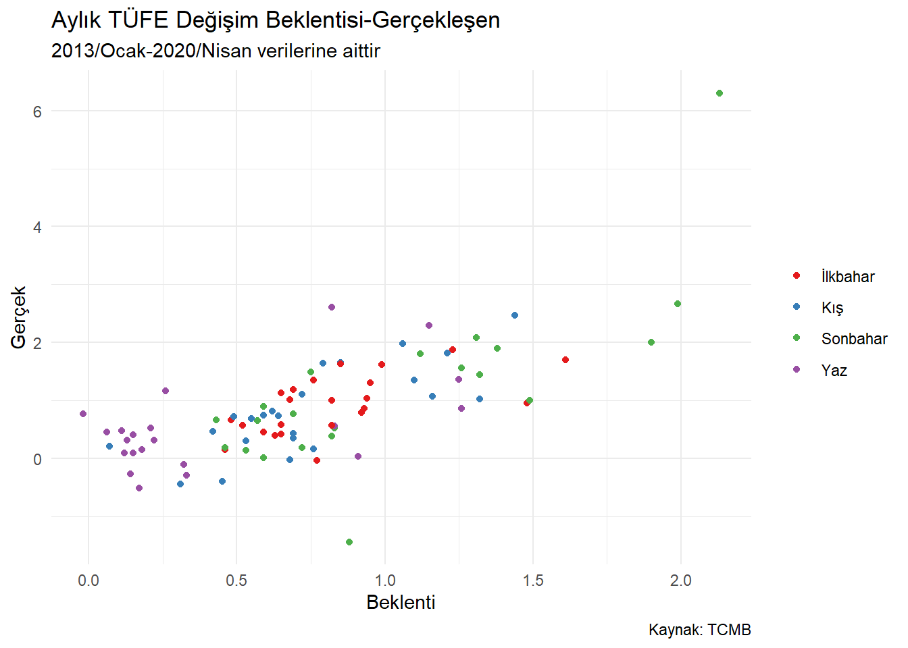
y eksenine ait değerleri daha okunabilir bir formata getirebiliriz.
Renkleri değiştirebiliriz.
ggplot(data = v23) +
geom_area(mapping = aes(x = `Gün`, y = `Sayı`, fill = Grup)) +
scale_y_continuous(labels = comma) +
scale_fill_viridis_d()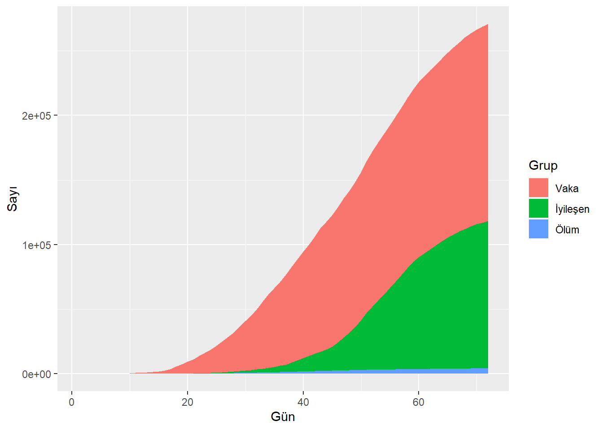
Lejantı düzenleyebiliriz.
x ve y eksenlerine ait başlıkları kaldırabiliriz.
Başlık ve kaynak ekleyebiliriz.
Temayı değiştirebiliriz.
ggplot(data = v23) +
geom_area(mapping = aes(x = `Gün`, y = `Sayı`, fill = Grup)) +
scale_y_continuous(labels = comma) +
scale_fill_viridis_d() +
theme_minimal() +
theme(legend.position = "bottom",
legend.title = element_blank()) +
labs(x = NULL,
y = NULL,
title = "Türkiye Covid-19 Vaka, İyileşen, Ölüm Sayıları",
caption = "Kaynak: CSSEGISandData")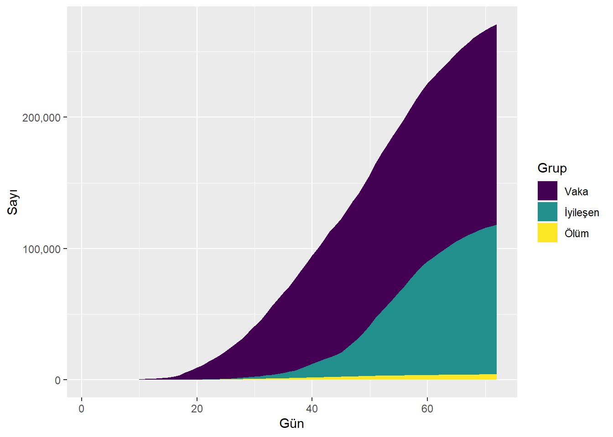
2.28 Stacked Bar (Yığılmış Çubuk)
Partilerin cinsiyete göre milletvekili sayısı:
#En basit şekilde
ggplot(v24) +
geom_bar(mapping = aes(x = Parti, y = `Sayı`, fill = Cinsiyet), position = "stack", stat = "identity")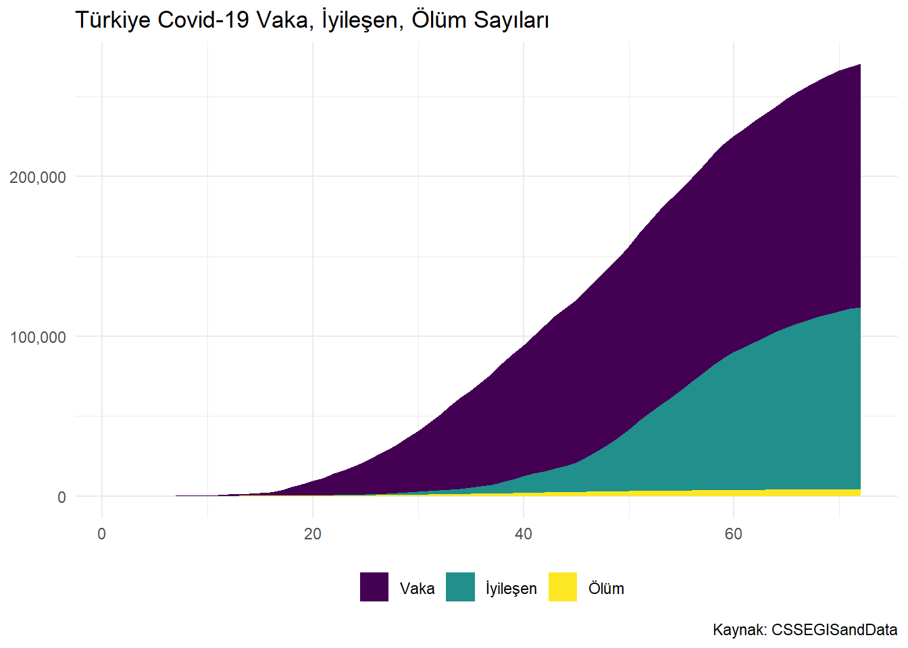
#Alternatif olarak yüzde ile gösterilebilir.
v24 %<>%
group_by(Parti) %>%
mutate(Oran = round(`Sayı` / sum(`Sayı`) * 100, digits = 1))
ggplot(v24) +
geom_bar(mapping = aes(x = Parti, y = Oran, fill = Cinsiyet), position = "stack", stat = "identity")Çubukların içine oranları yazabiliriz.
Renkleri değiştirebiliriz.
ggplot(v24, mapping = aes(x = Parti, y = Oran, fill = Cinsiyet)) +
geom_bar(stat = "identity") +
geom_text(mapping = aes(label = paste0("%",Oran)), position = position_stack(vjust = 0.5)) +
scale_fill_viridis_d()x ve y eksenlerine ait başlıkları kaldırabiliriz.
y eksenindeki değerleri kaldırabiliriz.
Lejantı düzenleyebiliriz.
Başlık ve kaynak ekleyebiliriz.
Temayı değiştirebiliriz.
ggplot(v24, mapping = aes(x = Parti, y = Oran, fill = Cinsiyet)) +
geom_bar(stat = "identity") +
geom_text(mapping = aes(label = paste0("%",Oran)), position = position_stack(vjust = 0.5)) +
scale_fill_viridis_d() +
theme_minimal() +
theme(legend.title = element_blank(),
axis.text.y = element_blank()) +
labs(x = NULL,
y = NULL,
title = "TBMM Milletvekilleri Cinsiyete Göre Dağılım",
subtitle = "5 parti dahil edilmiştir",
caption = "Kaynak: TBMM")2.29 Timeline (Zaman Çizelgesi)
TCMB başkanları:
2.30 Treemap (Ağaç Harita)
İl ve türlerine göre motorlu kara taşıtı sayıları:

Renklendirmeyi farklı yapabiliriz.
Başlığı düzeltebiliriz.
Etiketlerin yerlerini merkezi yapabiliriz.
treemap(dtf = v26,
index = "Araçtipi",
vSize = "Taşıtsayısı",
palette = "Dark2",
title = "Türlerine Göre Motorlu Kara Taşıtı Sayıları, 2020 | TÜİK",
align.labels = c("center","center"))- Aynısını illere ayırarak da yapabiliriz.
2.31 Violin (Viyolonsel)
Günlük BIST Hizmet, Mali, Sınai, Teknoloji endeks kapanışları:
y eksenine ait değerleri daha okunabilir bir formata getirebiliriz.
Kutuları renklendirebiliriz.
ggplot(data = v3) +
geom_violin(mapping = aes(x = Endeks, y = `Kapanış`)) +
scale_y_continuous(labels = comma)Lejantı kaldırabiliriz.
x eksenine ait başlığı kaldırabiliriz.
Başlık, alt başlık ve kaynak ekleyebiliriz.
Temayı değiştirebiliriz.
ggplot(data = v3) +
geom_violin(mapping = aes(x = Endeks, y = `Kapanış`, fill = Endeks)) +
scale_y_continuous(labels = comma) +
theme_minimal() +
theme(legend.position = "none") +
labs(x = NULL,
title = "Günlük BIST Hizmet, Mali, Sınai, Teknoloji Endeks Kapanışları",
subtitle = "Son 1 yıla ait verilerdir",
caption = "Kaynak: TCMB") +
scale_fill_brewer(palette = "Set1")2.32 Wordcloud (Kelime Bulutu)
Türkçe atılan ‘virüs’ tweetleri: